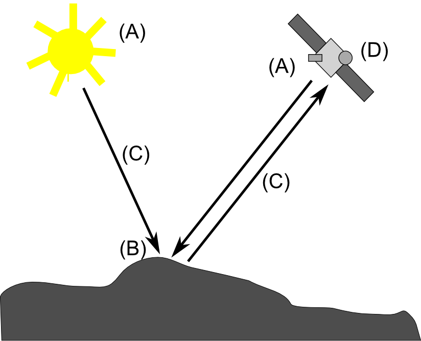
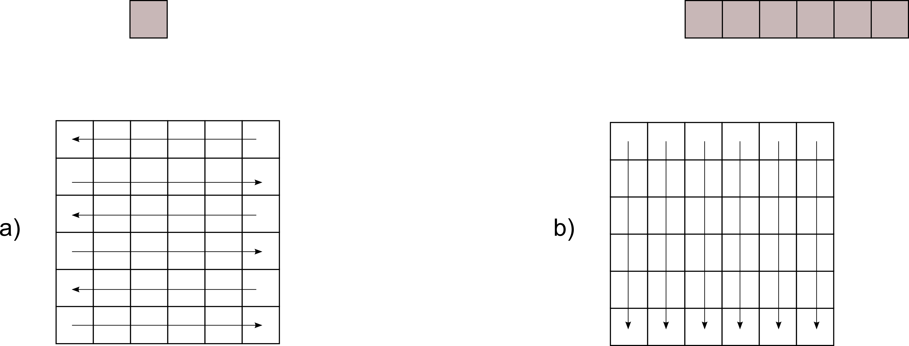
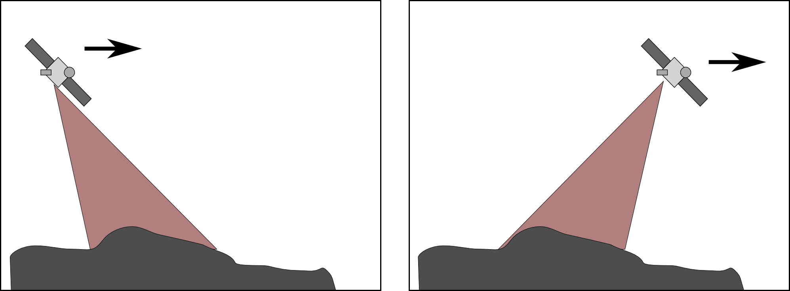
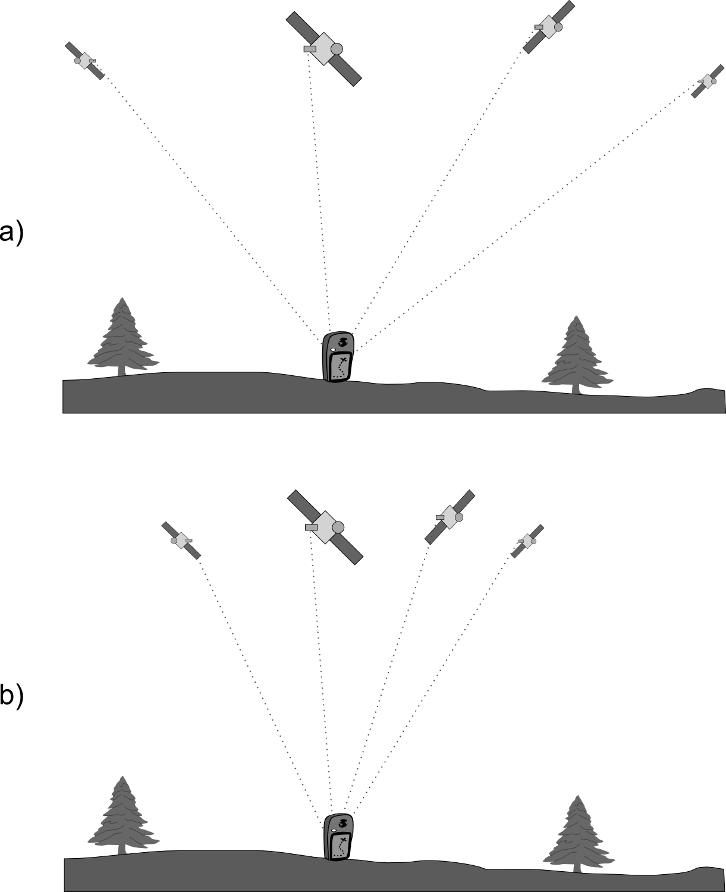
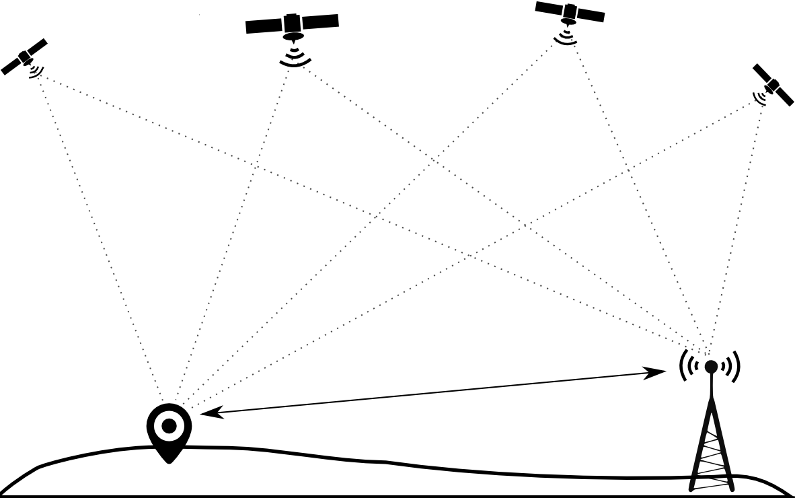

Una vez conocemos los modelos de representación y sabemos cómo almacenar la información geográfica, es momento de estudiar los distintos métodos que nos permiten llevar a la práctica el proceso de creación del dato geográfico, y los orígenes desde los que estos se generan. En este capítulo analizaremos las principales fuentes existentes, sus fundamentos y características, y cómo son los datos que se obtienen a partir de ellas.
Para seguir el contenido de este capítulo, es importante tener una buena comprensión de todo lo descrito en el capítulo Tipos_datos, en especial lo relativo a modelos de representación.
Introducción
El origen de los datos con los que trabajamos en un SIG puede ser sumamente variado y presentarse asimismo en formas diversas. La metodología seguida en la recolección de datos condiciona directamente la forma en que estos datos llegan a nosotros, y por tanto el uso que les podemos dar dentro de un SIG o las operaciones que debemos realizar con ellos de cara a poder adaptarlos para la realización de un trabajo concreto.
No hace tanto tiempo, toda la información que se manejaba dentro de un SIG tenía su origen en un mapa en papel, el cual debía prepararse para adaptarse a la naturaleza propia del SIG. El desarrollo de los SIG ya había comenzado a dar sus frutos y se obtenían los primeros programas, pero eran necesarios datos para utilizarlos. Sin embargo, los datos geográficos de los que se disponía no se encontraban en formato digital, por lo que no eran adecuados para su uso dentro de un SIG.
Una tarea básica en esos tiempos era la digitalización de cartografía, es decir, convertir los datos geográficos en formato impreso en datos en formato digital que un SIG pudiera manejar. La disponibilidad de datos digitales era baja, pero, como resulta lógico pensar, sí que existía una gran cantidad de datos geográficos en otros formatos tales como mapas, cartas de navegación, fotografías aéreas, etc. La tecnología ha ido avanzando y ya se producen datos directamente en formato digital, considerando específicamente la existencia de los SIG como herramientas básicas de manejo de datos geográficos. No obstante, los datos en formato impreso, así como las técnicas que se emplearon en su creación, siguen siendo válidas, y sirven igualmente para crear datos geográficos que podemos emplear en un SIG.
Hoy en día, la situación es bien distinta a la de aquellos primeros tiempos, y puede afirmarse que los orígenes a partir de los cuales se generan los datos geográficos son muy diversos. Esto es así porque aunan técnicas recientes y más adaptadas al entorno de los SIG con métodos clásicos que, no obstante, no han perdido su vigencia y valor. En la actualidad, la recolección de datos geográficos es un ámbito complejo con muchas alternativas, las cuales deben integrarse dentro de un SIG para permitir que este despliegue todo su potencial sobre dichos datos. Todo este conjunto de técnicas de adquisición de datos conforman un amplio abanico de posibilidades de las cuales el usuario de SIG debe nutrirse para trabajar siempre en las mejores condiciones posibles, maximizando la precisión y alcance de su trabajo.
Integrar dentro del trabajo con un SIG todas las fuentes de datos disponibles es una tarea que requiere un conocimiento detallado de estas, con objeto de poder establecer la mejor manera de combinarlas, y elegir en cada caso la mejor opción de las disponibles. A lo largo de este capítulo veremos las principales técnicas existentes para la creación de datos geograficos en un formato apto para su uso en un SIG, centrándonos en los pormenores de proceso y las particularidades de los datos generados en cada caso. Para ello, veremos todo el conjunto de fuentes de las cuales pueden provenir los datos con los que trabajamos en un SIG, desde las más modernas hasta las más antiguas, así como las metodologías que permiten convertir las formas no digitales en datos aptos para su uso en dicho SIG. El objetivo es que, al final del capítulo, se conozcan con detalle todas las formas en las que los datos geográficos pueden presentarse, se entiendan estas completamente con independencia de su origen, y se sepan utilizar y combinar todas las fuentes de datos, extrayendo lo mejor de cada una de ellas.
Datos digitales y datos analógicos
La principal diferencia que se presenta desde la aparición de los SIG es la necesidad de utilizar datos digitales. Un SIG implica una aplicación informática, y esta se alimenta en última instancia exclusivamente de datos digitales. Esta es la razón por la que debemos alimentar nuestro SIG con una serie de valores numéricos, y llegar a ellos a partir de la realidad que se pretende modelizar implica toda una serie de etapas, las cuales ya vimos con detalle en el capítulo Tipos_datos
Gran parte de los datos geográficos que se producen actualmente son en formato digital. Otros, a pesar de producirse hoy en día, no lo son directamente. Y junto a estos tenemos, como ya sabemos, todos los datos (que no son pocos) generados con anterioridad y que se presentan en diversas formas. Pero si deseamos trabajar con ellos en un SIG, de un modo u otro todos habrán de acabar siendo digitales.
Los datos geográficos digitales tienen una serie de ventajas frente a los analógicos (además del mero hecho de que podemos incorporarlos a nuestro SIG), y suponen, como sucede en muchos otros campos, un salto cualitativo importante. Entender las ventajas frente a los datos analógicos ayuda a comprender un poco más la importancia de los SIG y la relevancia que cobran en el manejo de los datos geográficos. Estas ventajas pueden resumirse en las siguientes:
Sencillez de actualización. La cartografía digital es editable, y esto simplifica enormemente la introducción cambios. Si en una capa con información catastral cambia la frontera de una parcela, basta modificar esta frontera. En un mapa analógico habría que rehacer todo el mapa y volver a imprimirse.
Además, y gracias a la división en capas, pueden actualizarse a distintos ritmos las distintas variables, pues son independientes y pueden modificarse por separado.
Haciendo una analogía con el mundo editorial, piénsese en un diario impreso, con una única edición al día, en la que se ha de esperar al día siguiente para introducir todas las noticias que se vayan produciendo durante esa misma jornada. En su equivalente digital, la información se actualiza prácticamente en tiempo real, y podemos conocer las noticias mucho antes, pues es más sencillo actualizar esa página que volver a poner la imprenta en marcha.
Es asimismo muy importante el hecho de que, gracias a los sistemas que centralizan el acceso a los datos, esta edición y actualización de datos pueden hacerla varias personas de modo concurrente. Esto no resulta posible en el caso de cartografía impresa, donde frecuentemente se encuentra el problema de que una cartografía de uso interno en una organización (por ejemplo, un ayuntamiento que guarda un inventario de su mobiliario urbano) ha sido editada por varias personas (el operario que sustituye un elemento de ese mobiliario luego lo registra en su inventario, y en un instante distinto otro operario puede añadir en su propio mapa la localización de un nuevo elemento añadido), siendo necesario después unir todas las modificaciones, lo cual no siempre resulta sencillo o incluso posible.
Si varias personas trabajan con cartografía impresa de una zona, cada una de ellas tendrá su propio mapa. Con la cartografía digital, todos pueden obtener la cartografía de un repositorio central, de tal modo que si la editan, están editando una única versión, y no es necesario después poner en común todas sus aportaciones para crear una nueva cartografía actualizada.
Facilidad de distribución. Resulta más sencillo y menos costoso distribuir cartografía digital que analógica, ya que esto se puede hacer rápidamente por Internet, por ejemplo. Volviendo al ejemplo del diario, las noticias se actualizan y se ponen en Internet, de donde cada lector las descarga de inmediato. El diario impreso requiere una cadena de distribución más costosa, desde la imprenta hasta el punto de venta.
Espacio de almacenamiento. Se generan actualmente ingentes volúmenes de datos que además, y gracias a que son más fáciles de actualizar, se producen con una frecuencia mucho mayor. No obstante, un soporte digital puede almacenar una enorme cantidad de estos ocupando una fracción del espacio físico. En un ordenador dotado de una buena capacidad de almacenamiento caben los contenidos de una cartoteca y los de la hemeroteca de ese diario del que hablamos. Las mismas cartoteca y hemeroteca en formato impreso requieren edificios enteros.
Facilidad y precisión de análisis. Como ya veremos en la parte correspondiente, el salto cualitativo que se da en el campo del análisis es enorme. Podemos hacer con los datos geográficos digitales cosas que no eran posibles con los analógicos y, mejor aún, podemos automatizar estos análisis. Asimismo, la precisión es mayor, ya que depende únicamente de los datos y la precisión intrínseca de estos, pero no de la operación de análisis (piénsese en un mapa impreso y una serie de operarios midiendo la longitud de un río sobre él. Es probable que lleguen a resultados similares pero no idénticos. Con cartografía digital, cualquier operario, y en cualquier SIG —suponiendo que implementan todos las mismas fórmulas— llegaría al mismo resultado exacto).
Facilidad de mantenimiento. Aunque no se introduzcan modificaciones y no se actualicen los datos, el formato digital hace más fácil su conservación. La degradación del soporte no degrada directamente el dato en sí, haciéndole perder calidad. La degradación del soporte analógico (el papel), sí que lo hace. Además, los datos digitales pueden replicarse con suma facilidad, por lo que su persistencia está garantizada en mayor medida y a un menor coste que la de los datos analógicos.
Así pues, disponemos para nuestro trabajo en nuestro SIG de datos analógicos y datos digitales, siendo estos últimos los que necesitamos en última instancia, y que presentan las ventajas anteriormente descritas frente a los primeros. En las siguientes secciones, veremos con detalle todos los distintos tipos de datos geográficos, tanto digitales como analógicos, la forma en que se obtienen, sus características, cómo se incorporan a un SIG, y en general todo aquello que resulte de interés para una mejor comprensión y uso posterior de los mismos.
Fuentes primarias y fuentes secundarias
Como hemos visto, algunos datos que utilizamos en un SIG son de tipo analógico, mientras que otros son de tipo digital. En algunos casos (generalmente en los analógicos), estos datos no han sido tomados pensando en su utilización en un SIG, y nos van a servir de base para obtener otros que sí pueden emplearse directamente dentro de un SIG. Por el contrario, existen otros datos que ya han sido recogidos considerando su utilización dentro de un Sistema de Información Geográfica, y la forma en la que se presentan ya es adecuada para incorporarlos en este y trabajar con ellos.
En base a lo anterior, se define una forma distinta de clasificar los datos espaciales con los que trabajamos en un SIG: datos primarios (o procedentes de una fuente primaria) y datos secundarios (o procedentes de una fuente secundaria) [Jackson1991Longman].
Los datos primarios son aquellos que podemos emplear en un SIG y que, en su forma original, ya son susceptibles de ser sometidos a las operaciones de manejo y análisis que incorporan los SIG. En este grupo encontramos las imágenes digitales o los datos obtenidos con GPS, todos ellos recogidos ya en origen de forma adecuada para su empleo directo en un SIG.
Por su parte, los datos secundarios derivan de algún otro tipo de dato previo, el cual no es adecuado para su empleo en un SIG. Entre estos incluimos las versiones digitales de los mapas clásicos (veremos en breve cómo se lleva a cabo esa conversión de un documento analógico a uno digital), así como los datos procedentes de un muestreo o levantamiento tradicional. Otros provenientes de cartografía impresa, tales como capas de elevaciones, también se incluyen en este grupo.
Al desarrollar las fuentes de datos en este capítulo, se tratarán tanto fuentes primarias como secundarias, y en el caso de estas últimas se tratarán a su vez las formas en las que a partir de estas pueden derivarse datos digitales que puedan ya ser incorporados a un SIG.
Teledetección
La primera fuente de datos que trataremos en este capítulo es la teledetección. Entendemos por teledetección el estudio y medida de las características de una serie de objetos (en nuestro caso elementos de la superficie terrestre) sin que exista contacto físico [Curran1991Longman][Lillesand1997Wiley][Chuvieco1996Rialp]. Para ello, se miden las perturbaciones que el objeto provoca en su entorno, principalmente las de tipo electromagnético.
Tradicionalmente, la teledetección se ha estudiado como una materia complementaria pero en cierto modo separada de los Sistemas de Información Geográfica. Ello es debido principalmente a que se trata de una materia muy extensa cuyo desarrollo se ha producido en cierta parte de forma ajena al de los SIG. No obstante, a medida que ambos campos se han ido desarrollando, la convergencia entre SIG y teledetección se ha ido haciendo cada vez más evidente. No solo las aplicaciones SIG incorporan elementos para el manejo, tratamiento y análisis de datos procedentes de la teledetección, sino que las formulaciones de ambos ámbitos contienen elementos similares.
La teledetección es hoy en día un elemento clave para la formación en SIG, y como tal debe incluirse en un libro como este. Los bloques tradicionales en los que se divide el temario fundamental de la teledetección no incorporan únicamente el registro de la información y la creación de los datos, sino también su proceso posterior, interpretación y tratamiento. Este último no se trata, sin embargo, en este capítulo, sino en la parte dedicada al análisis, integrado junto con otras formulaciones similares para proceso de imágenes.
La teledetección es, como decimos, una fuente de datos primordial en los SIG, y el verdadero aprovechamiento de los productos actuales de la teledetección solo se da con el concurso de los SIG y sus capacidades de análisis y manejo de datos. No obstante, y atendiendo a la definición dada, los procesos de teledetección aplicados al ámbito cartógráfico y el análisis espacial se remontan a tiempo atrás, concretamente a la mitad del siglo XIX. Fue entonces cuando se tomaron las primeras fotografías aéreas uniendo el recién desarrollado campo de la fotografía junto con la utilización de globos aerostáticos como medio para situar el aparato fotográfico a una altura suficiente que permitiera obtener las imágenes.
Las fotografías aéreas fueron el primer producto de la teledetección, pero hoy en día existen otros que, basados en esa misma idea de registro de información, pueden ser empleados como fuentes de datos espaciales dentro de un SIG. Para comprenderlos, estudiemos algo más en detalle los elementos del proceso de teledetección, los cuales se representan de forma esquemática en la figura \ref{Fig:Elementos_teledeteccion}. Estos elementos son los siguientes:

Esquema de un sistema de teledetección.
$$\label{Fig:Elementos_teledeteccion}$$
Una fuente de radiación (A). Puede ser de origen natural o artificial. La radiación emitida por dicha fuente llega al terreno y sufre una perturbación causada por los elementos de este, siendo esta perturbación el objeto de estudio de la teledetección. Los propios objetos pueden ser también emisores ellos mismos de radiación.
Unos objetos (B) que interaccionan con la radiación o la emiten, según lo anterior.
Una atmósfera (C) por la que se desplaza la radiación, tanto desde la fuente hasta el objeto como desde el objeto hasta el receptor. La atmósfera también interactúa con la radiación, introduciendo igualmente perturbaciones en ella.
Un receptor (D) que recoge la radiación una vez esta ha sido perturbada o emitida por los objetos. El receptor va a generar como producto final una imagen (en términos de un SIG, una capa ráster), en cuyas celdas o píxeles se va a contener un valor que indica la intensidad de la radiación. Estos valores son valores enteros que indican el nivel de dicha radiación dentro de una escala definida (habitualmente valores entre 1 y 256), y se conocen dentro del ámbito de la teledetección como Niveles Digitales.
A lo largo de este apartado veremos con detalle estos elementos. Para estudiar los dos primeros, estudiaremos los fundamentos físicos relativos a la radiación y a la la interacción entre esta y la materia, mientras que para el estudio del sistema receptor analizaremos los elementos de este en dos componentes por separado: sensores y plataformas.
La interacción de la atmósfera interesa de cara a eliminar su efecto, ya que lo que resulta de interés en general son los objetos en la superficie terrestre, no la atmósfera como tal. Eliminar esta influencia de la atmósfera es parte de los procesos posteriores que se realizan con la imagen y que incluyen también, como se mencionó anteriormente, la interpretación y otros procedimientos diversos sobre esta. Todos ellos no son tratados en este capítulo sino, tal y como se dijo, en un capítulo independiente dentro de la parte de procesos.
Fundamentos físicos
Es necesario conocer los conceptos fundamentales sobre la radiación y su interacción con la materia (los objetos de la superficie terrestre) para poder entender cómo, utilizando la radiación de una fuente dada, se crea una imagen como resultado final en un proceso de teledetección.
La radiación electromagnética
La radiación electromagnética es una de las cuatro fuerzas fundamentales de la naturaleza y deriva del campo electromagnético, el cual es ejercido por las partículas cargadas eléctricamente. Para explicar esta existen dos modelos conocidos como modelo ondulatorio y modelo de partículas. Según el primero, que será en el que profundicemos algo más, la radiación electromagnética es producto de las alteraciones en los campos eléctrico y magnético, que generan dos ondas ortogonales entre sí, correspondientes a cada uno de los campos anteriores (Figura \ref{Fig:Radiacion_electromagnetica}).
Ondas correspondientes a los campos magnético y eléctrico, ortogonales entre sí (Tomado de Wikipedia).
$$\label{Fig:Radiacion_electromagnetica}$$
Estas ondas se desplazan a la velocidad de la luz, y se pueden describir con los parámetros habituales, tales como la longitud de onda o la frecuencia. Una mayor longitud de onda (y, por tanto una menor frecuencia) tiene asociada una mayor energía de la radiación.
La radiación electromagnética puede cubrir de forma continua todo un amplio rango de valores de longitudes de onda. Este rango se conoce como espectro electromagnético. Pese a la continuidad de sus valores, es habitual agruparlos en regiones, discretizando la amplitud del espectro, ya que las radiaciones en longitudes de onda similares presentan a su vez comportamientos similares en muchos sentidos. En la figura \ref{Fig:Espectro_electromagnetico} se muestra un esquema del espectro electromágnético y sus principales regiones de interés.
Espectro electromagnético y sus principales regiones de interés (Tomado de Wikipedia).
$$\label{Fig:Espectro_electromagnetico}$$
Dentro de estas regiones, son de destacar las siguientes:
Rayos $\gamma$ $<$0.03 $nm$.
Rayos X (0.03 $nm$ - 3 $nm$).
Ultravioleta (3 $nm$ - 0.3 $\mu$).
Visible (0.3 $\mu$ - 0.7 $\mu$). Se corresponde con las radiaciones que pueden ser detectadas por el ojo humano o por aparatos tales como una cámara fotográfica común. Observando la figura \ref{Fig:Espectro_electromagnetico} puede apreciarse que esta región representa una porción muy pequeña del total del espectro. Existen muchas otras regiones que no podemos «ver» pero que, empleando la tecnología adecuada, sí que pueden aprovecharse para crear imágenes dentro de un proceso de teledetección, siendo de gran utilidad para el estudio de numerosos procesos.
Las distintas longitudes de onda dentro de esta región son las responsables de los distintos colores que percibimos. Así, por ejemplo, el azul se corresponde con el rango entre 0.4 $\mu$ y 0.5 $\mu$, mientras que el verde lo hace con el rango entre 0.5 $\mu$ y 0.6 $\mu$
Infrarrojo cercano (0.7 $\mu$ - 1.3 $\mu$).
Infrarrojo medio (1.3 $\mu$ - 8 $\mu$).
Infrarrojo lejano o térmico (8 $\mu$ - 14 $\mu$). Dentro de esta región se encuentran principalmente las radiaciones emitidas por los cuerpos debido a su temperatura.
Microondas (1 $mm$ - 25 $cm$).
En el capítulo Procesado_imagenes estudiaremos para qué tipo de análisis resulta útil cada una de las regiones del espectro, cuando veamos como analizar las imágenes procedentes de la teledetección.
Como ya se dijo en el capítulo Tipos_datos, las imágenes como capas ráster presentan habitualmente la particularidad de tener varias bandas. En lugar de un único valor para cada celda, existen $n$ valores, uno por cada banda. Esto es así porque la imagen recoge la intensidad de la radiación (recordemos que esto se denominaba Nivel Digital) dentro de una amplitud dada del espectro, y a su vez subdivide esta en distintas franjas. Los Niveles Digitales de cada banda corresponden a la intensidad dentro de una de esas franjas del espectro en particular.
Interacción entre radiación y materia
La radiación emitida por una fuente de radiación es alterada por la presencia de los distintos objetos, que interactúan con ella. Independientemente de su procedencia, para toda radiación se dan tres fenómenos fundamentales al alcanzar un objeto:
Absorción. El objeto toma la energía de la radiación.
Transmisión. La radiación atraviesa el objeto y continua su camino.
Reflexión. la radiación «rebota» en el objeto y vuelve al espacio.
Estos tres fenómenos se dan en diferente proporción en función de las características del objeto y de la radiación. Para una longitud de onda dada, existe, pues, un porcentaje de la radiación que es absorbida por el objeto, otra que se transmite a través de él y otra que es reflejada. La parte que interesa a efectos de la teledetección es aquella que se refleja en el objeto, ya que esta es la que posteriormente puede recogerse y emplearse para la generación de las imágenes.
La proporción en la que los tres procesos anteriores se dan en un objeto no es la misma para todas las radiaciones. Un objeto puede absorber una gran parte de la radiación dentro de una región del espectro y sin embargo reflejar la mayoría de ella en una región distinta. Es por ello que, en función del análisis que se desee realizar, debe trabajarse con imágenes que traten una u otra región.
Igualmente, una imagen con varias bandas contiene información sobre la intensidad de la radiación reflejada en distintas partes del espectro. Puesto que cada objeto refleja de forma diferente la radiación en cada una de esas partes, pueden igualmente emplearse para identificar objetos particulares si se conoce la respuesta de estos en determinadas bandas. Por ejemplo, si sabemos que los objetos que buscamos reflejan gran cantidad de radiación en todas las longitudes de onda excepto en un rango concreto. Aparece así el concepto de firma espectral como la respuesta característica de un tipo de objeto dentro del espectro electromagnético. Veremos mucho más al respecto en el capítulo Procesado_imagenes, así como en el Estadistica_avanzada, donde estudiaremos una aplicación habitual de dichas firmas espectrales.
Además de la interacción con los objetos que se pretenden estudiar, la radiación interactúa con la atmósfera. Esta interacción afecta al resultado y es una variable a considerar en ciertas operaciones posteriores con las imágenes. Veremos más sobre la interacción entre radiación y atmósfera en el apartado Correccion_imagenes, cuando tratemos esas operaciones.
Sensores y plataformas
En un sistema de teledetección, dos son los elementos tecnológicos principales que lo definen: el sensor y la plataforma.
El sensor es el elemento que incorpora la capacidad de «leer» la radiación electromagnética y registrar su intensidad dentro de la una zona concreta del espectro. En palabras más sencillas, es el aparato que nos permite «tomar» la imagen, y puede ir desde una simple cámara fotográfica hasta un sensor más especializado capaz de tomar cientos de bandas en una región del espectro de gran amplitud.
La plataforma, por su parte, es el medio en el que se sitúa el sensor y desde el cual se realiza la observación. Los dos tipos principales de plataformas son aquellas situadas dentro de la atmósfera terrestre (aviones en su mayoría, aunque también en otros medios tales como globos aerostáticos) y aquellas situadas fuera de la atmósfera (a bordo de satélites)
Las características de estos dos elementos definen las del sistema en su conjunto, así como las propiedades de sus productos derivados y la utilidad que estos presentan.
Plataformas
La plataforma es el medio en el que se transporta el sensor, y condiciona las mediciones efectuadas por este, ya que establece la distancia a la que el sensor se sitúa del elemento registrado (la superficie terrestre). Esta distancia puede ser del orden de algunos centenares de metros o unos pocos kilómetros, o bien de muchos kilómetros. En el primer caso, la plataforma más habitual es el avión, mientras que en el segundo caso lo más frecuente es el uso de satélites.
Los aviones son las plataformas clásicas a bordo de las cuales se montaban originariamente las cámaras empleadas para la realización de fotografías aéreas. No obstante, hoy en día pueden montarse igualmente otros sensores más complejos y modernos a bordo de aeronaves.
Las ventajas del empleo de aviones como plataformas de teledetección son las relacionadas con la disponibilidad de la plataforma, que es mucho mayor que en el caso de emplear satélites. Podemos (dentro de lo razonable) escoger cómo, cuándo y dónde efectuar un vuelo y tomar imágenes, mientras que en caso de satélites la disponibilidad viene condicionada por numerosos factores y es muy reducida.
Respecto a los inconvenientes, pueden citarse entre ellos la inestabilidad de la plataforma y la dependencia de las condiciones del clima, que pueden afectar a la propia estabilidad y a la calidad de los resultados, o incluso impedir la realización del vuelo. Por ser plataformas de baja altura, no pueden abarcar superficies tan amplias como los satélites, requiriendo más tiempo para cubrir una zona dada.
Por su parte, los satélites artificiales presentan unas características distintas como plataformas de teledetección, siendo muy útiles para la teledetección sobre la superficie terrestre. Es habitual que a bordo de un mismo satélite coexistan diversos sensores, de forma que una única plataforma transporta varios de ellos.
A diferencia de un avión, un satélite no puede dirigirse a voluntad (no puede pilotarse), y su movimiento es una característica inherente que viene definida por una serie de parámetros. Estos parámetros se conocen como parámetros orbitales pues definen la órbita descrita por el satélite en torno a la Tierra.
Por una lado, las órbitas pueden clasificarse en función de su eje de rotación en tres tipos:
Ecuatoriales, si se sitúan en el mismo plano en el ecuador terrestre.
Polares, si se sitúan en un plano que contiene al eje de rotación terrestre.
Semipolares, si la órbita es oblicua al eje de rotación
Con un criterio distinto, atendiendo a la forma en que se produce el movimiento, distinguimos dos tipos de órbitas para un satélite:
Geosíncronas. El satélite se sitúa sobre un punto fijo de la Tierra y su movimiento sigue al de rotación de esta. Es decir, no existe movimiento relativo entre dicho punto de la superficie terrestre y el satélite. Todas las imágenes que se toman desde el satélite tendrán así el mismo encuadre y cubrirán una extensión idéntica. La altura del satélite es fija, siendo esta de 35.786 Km, ya que esta altura hace que la velocidad del satélite se corresponda con la de rotación de la Tierra.
La ventaja de este tipo de satélites es que, por situarse siempre sobre un punto y siempre teniendo visión sobre una zona dada, se pueden actualizar con mucha frecuencia las imágenes. El inconveniente principal radica en el hecho de que las zonas alejadas del punto sobre el que se sitúa el satélite tendrán mala cobertura, y existirán zonas no cubiertas de las que no resultará posible obtener imágenes con los sensores montados a bordo de dicho satélite. Pese a que un sensor sobre un satélite con órbita geosíncrona cubrirá una gran porción de la superficie terrestre (debido a la elevada altura a la que ha de situarse para tener dicha órbita), no resulta posible, como es lógico, cubrir toda ella y hacerlo además en las mismas condiciones en todas las zonas.
Heliosíncronas. Las órbitas heliosíncronas son generalmente polares. Mientras el satélite recorre la órbita, la Tierra efectúa su movimiento de rotación, lo cual hace que a cada vuelta de la órbita se cubran zonas distintas. De esta forma, se consigue dividir la totalidad de la superficie terrestre en bandas que se van recorriendo sucesivamente hasta que el satélite vuelve a situarse en el mismo punto inicial. Las órbitas están diseñadas de tal manera que ese regreso al punto inicial se produce a la misma hora solar exacta que en el anterior ciclo, de forma que las imágenes tomadas en un punto dado son registradas siempre a la misma hora y en condiciones similares de iluminación. Para que sea posible realizar una órbita de este tipo, el satélite debe situarse entre 300 y 1500 Km de altura.
La figura \ref{Fig:Orbita_landsat} muestra un ejemplo de la forma en que un satélite con una órbita heliosíncrona barre toda la superficie de la Tierra.
Esquema de barrido de un satélite con órbita heliosíncrona. Tomado de [webLandsat]
$$\label{Fig:Orbita_landsat}$$
Debido al movimiento que causa las distintas franjas, los satélites con este tipo de órbitas pueden cubrir toda la superficie terrestre, algo que no es posible con los de órbita geosíncrona. No obstante, una vez que se toma una imagen de una zona, la plataforma no regresa a ella hasta que se concluye todo el ciclo, habiendo transcurrido un periodo de tiempo que se conoce como periodo o intervalo de revisita. Debido a ello, la actualización de las imágenes no puede ser tan inmediata como en el caso de satélites geosíncronos.
Sensores
Montado a bordo de cualquiera de los tipos de plataformas que hemos visto en el apartado anterior, el sensor es el encargado de registrar la radiación electromágnética procedente de la zona estudiada y «tomar» la imagen.
Existen diversas formas de clasificar los sensores. Una división básica es la que distingue sensores activos y sensores pasivos. Como ya sabemos, la radiación que recoge el sensor es el resultado de una fuente de radiación electromagnética, cuyas emisiones interactúan con el medio, que refleja una parte de las radiaciones que le llegan. Los sensores pasivos aprovechan las fuentes de radiación existentes en la naturaleza (fundamentalmente el Sol) y se limitan a recoger la radiación de dichas fuentes reflejada por los elementos del medio, o la que estos elementos emiten por sí mismos. El sensor no produce ningún tipo de radiación de por sí. Por el contrario, los sensores activos sí emiten radiación, y recogen dicha radiación tras ser reflejada por los elementos del medio.
La diferencia fundamental entre estos dos tipos de sensores es que los activos pueden funcionar en cualquier instante y no dependen de la condiciones atmosféricas o el momento del día. De la misma forma que no podemos tomar una fotografía de noche sin luz, y no podemos ver el suelo desde un avión cuando hay nubes, no podemos utilizar un sensor pasivo en esas condiciones para tomar una imagen. Sin embargo, sí podemos hacer una fotografía de noche si disponemos de un flash, ya que la propia cámara emite la luz que necesita. La filosofía de un sensor activo es en cierta medida similar al caso de la cámara con flash.
Los sensores activos emiten su propia radiación, por lo que no es necesario que existan fuentes externas (no es necesaria la luz solar). Asimismo, los elementos atmosféricos tales como las nubes, que afectan a la radiación visible, no afectan a otros tipos de radiación, permitiéndoles una operatividad total en la gran mayoría de condiciones. Por ello, los sensores activos suelen trabajar en el rango de microondas (frente a los sensores pasivos, que lo hacen en las regiones del visible y el infrarrojo principalmente), ya que estas son capaces de atravesar la atmósfera en prácticamente todas las condiciones, presentando así ventajas frente a los sensores pasivos en este aspecto.
Aunque el producto habitual de la teledetección son las imágenes, entendidas estas como algo visual, algunos sensores no forman tales imágenes, y los valores que recogen no son las intensidades de la radiación reflejada por el terreno en una longitud de onda dada. Es decir, no se corresponderían con el concepto de Nivel Digital ya presentado. Este tipo de resultados son habituales en los sensores de tipo activo, en los que la radiación que el propio sensor emite es recogida tras reflejarse en el terreno, pero la variable que se mide de ella no es su intensidad sino, por ejemplo, el tiempo que tarda en regresar. Planteamientos como estos permiten la generación de capas de datos que no son imágenes como tales, como es el caso de las capas de elevación (Modelos Digitales de Elevaciones), ya que el tiempo de retorno está directamente relacionado con la distancia recorrida por la radiación, y este con el relieve del terreno.
Estos sensores, no obstante, operan de un modo similar a lo que ya conocemos, y se consideran igualmente dentro del ámbito de la teledetección, pues se adscriben a la definición de esta dada al principio de este apartado. Veremos igualmente ejemplos de algunos de ellos cuando veamos más adelante algunos sensores de particular relevancia, ya que tienen una gran importancia en la actualidad para la generación de cartografía variada, como por ejemplo la ya citada de elevaciones.
El radar es la tecnología más importante dentro de este grupo. El sensor envía pulsos de radio, y posteriormente recoge estos midiendo su intensidad y pudiendo calcular también la distancia al objeto.
Puesto que la región de microondas en la que trabaja el radar es amplia, esta se divide a su vez en bandas. Los sensores de radar pueden trabajar con diferentes bandas de entre estas, las cuales tienen asignada una nomenclatura estandarizada. Además de esto, también puede trabajarse con diferentes polarizaciones de la señal de radio, obteniéndose resultados distintos en cada caso, lo que hace posible una mayor riqueza de resultados.
El radar es una técnica muy compleja cuyo estudio requiere el conocimiento de unos fundamentos teóricos propios que exceden el ámbito de este capítulo, y no profundizaremos más en ellos. Para el lector interesado, en la dirección Web [webRadarCanada] puede encontrarse información muy abundante sobre teledetección basada en radar.
Una técnica más moderna pero similar al radar es el denominado LiDAR , que emplea pulsos de láser. El LiDAR es en la actualidad la tecnología más avanzada para la creación de cartografía de elevaciones, y dentro de este campo ha supuesto una verdadera revolución, ya que obtiene resoluciones muy elevadas, tanto horizontales como verticales (resolución en los valores de elevación calculados).
Los sistemas modernos de LiDAR son capaces de proporcionar además varios retornos, de modo que, si el sensor sobrevuela una zona arbolada, se tiene información sobre la distancia a la copa y la distancia al suelo, ya que parte del láser atraviesa la copa y alcanza el terreno. Este tipo de resultados supone un salto cualitativo con respecto a los obtenidos con otras tecnologías. Esto permite no solo estudiar el terreno, sino derivar otros parámetro tales como la altura de la vegetación [Andersen2001PrecForestry]. Asimismo, debido a su precisión, permite recoger elementos del terreno que con otros sistemas no resulta posible registrar, tales como edificios. A modo de ejemplo, la figura \ref{Fig:LiDARWTC} muestra un modelo del World Trade Center el 27 de septiembre de 2001, creado a partir de datos LiDAR.
Modelo del World Trade Center realizado a partir de datos LiDAR tomados el día 27 de septiembre de 2001 (Fuente: NOAA/U.S. Army JPSD)
$$\label{Fig:LiDARWTC}$$
En la terminología del LiDAR, la imagen correspondiente al primer retorno (el de los puntos más altos) se conoce como Modelo Digital de Superficie (MDS), mientras que el correspondiente a la altura del suelo se conoce como Modelo Digital de Elevaciones (MDE). Veremos mucho acerca de MDE en posteriores capítulos de este libro.
En [Kraus2001IASPRS] puede encontrarse una buena descripción del proceso de creación de estas capas de elevación partir de datos LiDAR.
Además de la división entre activos y pasivos, otra forma de clasificar los sensores es en función de la forma en la que registran la imagen. Algunos sensores poseen un único detector de radiación que no cubre todo el ancho de la franja del terreno que se pretende recoger. Por medio de espejos oscilantes, se envía a este detector la radiación procedente de los distintos puntos a lo ancho de esa franja, de forma que se van recogiendo los distintos píxeles de la imagen uno a uno, recorriendo esta de un lado a otro (Figura \ref{Fig:Tipos_sensores}a). Estos sensores se denominan de barrido.
Los denominados sensores de empuje (Figura \ref{Fig:Tipos_sensores}b) eliminan la necesidad de utilizar espejos móviles, ya que poseen un número mayor de detectores que permiten cubrir todo el ancho de la imagen. Por ello, esta se va registrando no píxel a píxel, sino línea a línea.

Esquema de funcionamiento de un sensor de barrido (a) y uno de empuje (b)
$$\label{Fig:Tipos_sensores}$$
Resoluciones
Uno de los parámetros principales que definen las propiedades de un sistema de teledetección son las resoluciones. Estas establecen el nivel de detalle de los productos que el sistema genera, determinando este en las distintas magnitudes en las que el sistema opera. Las resoluciones dependen del sensor y de la plataforma como binomio operativo, y de las características propias de ambos. Distinguimos cuatro resoluciones, a saber:
Resolución espacial. Indica la dimensión del objeto más pequeño que puede distinguirse en la imagen. En líneas generales es el equivalente al tamaño de píxel), modificar el tamaño de píxel. Aunque este tamaño sea menor al original, los objetos de menor dimensión que podrán discernirse en esa imagen no serán iguales a ese tamaño, sino mayores.} es decir, a la dimensión real que un píxel de la imagen tiene sobre el terreno.
La resolución espacial está en función de la capacidad resolutiva del sensor y las características de la plataforma tales como la altura a la que se sitúa. Asimismo, la resolución espacial esta relacionada con la superficie que cada imagen cubre sobre el terreno. El concepto de Campo Instantáneo de Visión indica el ángulo de visión que abarca el sensor, y se utiliza habitualmente es este sentido. El Campo Instantáneo de Visión en Tierra expresa esta misma idea pero en unidades de longitud sobre el terreno, y es función del IFOV y la altura a la que se encuentre el sensor.
En el diseño de la órbita de un satélite debe tenerse en cuenta el campo de visión del sensor para optimizar el ciclo de toma de imágenes, así como para evitar que las distintas franjas que este cubre queden sin solaparse y existan zonas de las que no se tomen imágenes.
Resolución espectral. Todo sensor cubre una región particular del espectro y almacena esta mediante un número dado de bandas. La región del espectro abarcada y el número de bandas son los elementos que definen la resolución espectral. Esta será elevada si el número de bandas es alto, ya que cada banda cubrirá un rango de frecuencias de menor amplitud. De este modo, la información de dos frecuencias cercanas puede separarse, ya que estas serán recogidas en bandas distintas, mientras que si el número de bandas es menor pertenecerán a la misma banda y no podrá hacerse distinción alguna (la resolución será menor).
En función del número de bandas, pueden clasificarse las imágenes y los sensores que las generan. Una imagen en blanco y negro contiene una única banda. Las imágenes en color contienen tres bandas, correspondientes a las frecuencias del rojo, el verde y el azul. Existen igualmente sensores con algunas bandas adicionales como la del infrarrojo, que en total generan un número de bandas no superior a diez. Todas estas imágenes se conocen como multiespectrales.
Las imágenes superespectrales tienen una mayor resolución espectral (bandas más estrechas), y cubren una zona del espectro más amplia, no limitándose al rango visible o el situado inmediatamente junto a este. Por ello, su número de bandas es mayor, generando imágenes con varias decenas de ellas.
Por último, las imágenes hiperespectrales presentan más de cien bandas, lo cual permite una caracterización espectral sumamente precisa.
Resolución radiométrica. Para cada una de las bandas que produce un sensor (asociada esta a una determinada región del espectro según su resolución espectral), el dato recogido, que constituye su Nivel Digital, indica la intensidad correspondiente a esa región. El nivel de detalle con el que puede medirse esa intensidad es el que define la resolución radiométrica del sensor.
El número de Niveles Digitales distintos que pueden recogerse es la medida de la resolución espacial, y habitualmente es una potencia de dos (de la forma $2^n$). Tanto las imágenes en blanco y negro como las imágenes en color trabajan con 256 ($2^8$) niveles, ya que este es el valor más cercano al número de diferentes intensidades que el ojo humano puede diferenciar. No obstante, los sensores de teledetección pueden tener una mayor resolución radiométrica (hasta 1024 o 2048 niveles), que si bien no se aprecia en la representación visual, sí que supone una diferencia en el tratamiento analítico de esos Niveles Digitales.
En la figura \ref{Fig:Resolucion_radiometrica} puede apreciarse la diferencia entre dos imágenes, cada una de las cuales tiene una resolución radiométrica distinta.
Dos imagenes con distinta resolución radiométrica (de izquierda a derecha, 8 y 256 niveles, respectivamente).
$$\label{Fig:Resolucion_radiometrica}$$
Resolución temporal. Indica el tiempo que tarda el sensor en volver a tomar una imagen de una misma zona. Tiene sentido en el caso de sensores orbitales, que funcionan por ciclos, y tras concluir este ciclo, vuelven a comenzar la toma de imágenes en el mismo punto. En cada ciclo, el sensor cubre toda la superficie terrestre «barriendo» esta en franjas sucesivas.
La resolución temporal depende de la altura a la que se encuentra la plataforma que monta el sensor, así como la resolución espacial. Si el tamaño de las imágenes es reducido (GIFOV pequeño), las franjas son más estrechas y se requieren más para cubrir toda la superficie y volver a comenzar el ciclo, con lo que la resolución espacial será menor.
Parece lógico pensar que lo ideal en toda circunstancia sería disponer de imágenes procedentes de sistemas con altas resoluciones en cualquiera de las clases anteriores. De esta forma, tendríamos imágenes con gran detalle espacial, espectral y radiométrico, y actualizadas frecuentemente. No obstante, la tecnología actual no dispone de elementos que ofrezcan resoluciones elevadas en todas las magnitudes del proceso, y en la creación de los sensores se favorecen unas en detrimento de otras. Algunas resolución presentan además un cierto antagonismo, como hemos visto para las resoluciones espacial y temporal, con lo que no resulta viable que ambas sean elevadas simultáneamente.
Así, existen sensores con, por ejemplo, gran resolución espacial, en los cuales la resolución espectral no es tan elevada. Por el contrario, los sensores con mayor resolución espectral no suelen ofrecer un nivel de detalle espacial tan elevado como los anteriores. En ocasiones, una misma plataforma puede montar a bordo varios sensores, de tal forma que el conjunto de ellos ofrezca información detallada de forma global, pero un único sensor no proporciona resolución elevada en todas las variables.
Otro tipo de circunstancias relativas al sensor afectan igualmente a las resoluciones. Por ejemplo, aquellos sensores que trabajan con radiaciones de poca energía (en la región de las microondas) y son de tipo pasivo requieren una amplia extensión para recoger la suficiente energía como para poder ser detectada por dicho sensor. Por esta razón, su resolución espacial suele ser baja.
A la hora de utilizar imágenes de teledetección, debe considerarse qué tipo de resolución resulta de mayor interés para el proyecto que se lleva a cabo, teniendo en cuenta la escala de trabajo o el objetivo final que se persigue con el análisis a realizar, entre otros factores. En base a esto, se escogerá uno u otro producto, que será el que ofrezca los valores de resolución más adecuados en conjunto.
Si se pretende localizar elementos de pequeño tamaño, es imprescindible trabajar con altas resoluciones espaciales. Si lo que se desea es clasificar una serie de zonas en función de sus características, la resolución espectral debe ser alta, ya que, como veremos, se usa la información de todas las bandas para dar esa clasificación, y un número mayor de bandas dará como resultado una mayor precisión.
De igual, modo, la detección de cambios de intensidad en una banda hace necesario que se trabaje con una buena resolución radiométrica, pero si lo que se desea es estudiar esos cambios a lo largo de un periodo corto de tiempo, trabajar con un sensor con gran resolución temporal se hace imprescindible.
En cada caso, las circunstancias particulares del trabajo condicionan la elección de uno u otro sensor, puesto que, como se ha dicho, un único sensor no ofrece elevadas resoluciones en todas las variables.
La utilización simultánea de datos de varios sensores en un proyecto es una alternativa en ciertos casos. Como veremos, existen técnicas que permiten combinar imágenes con alta resolución espacial e imágenes con alta resolución espectral, con objeto de obtener nuevas imágenes que combinen lo mejor de ambas y ofrezcan un nivel de detalle conjunto mayor. Estas técnicas realizan el proceso conocido como fusión de imágenes, el cual trataremos en el apartado Fusion_imagenes, más adelante en este libro.
Además de lo anterior, un único sensor montado a bordo de un satélite puede operar en varios modos distintos. Es habitual que un sensor multibanda pueda registrar también imágenes de una sola banda, recogiendo en ella la intensidad de la radiación correspondiente a todo el espectro visible, de tal forma que genere una representación visual real. Estas se suelen representar habitualmente en escala de grises, resultando una imagen en blanco y negro.
Las imágenes de este tipo se conocen como pancromáticas, y suelen tener mayor resolución espacial, por lo que pueden emplearse para la fusión de imágenes señalada anteriormente. Así, un mismo sensor provee todos los datos necesarios para llevar a cabo ese proceso, tanto la imagen de gran resolución espacial (la pancromática) como la de gran resolución espectral (la imagen multibanda).
Principales sensores y productos
El número de diferentes productos provenientes de la teledetección es muy elevado en la actualidad. Ahora que ya conocemos los fundamentos del proceso y las principales características de un sistema de teledetección, es interesante mostrar un pequeño resumen de los principales productos disponibles. En ocasiones, desconocer la existencia de productos adecuados puede suponer la realización incorrecta o de modo ineficaz de un proyecto SIG, y dada la gran variedad existente, esto sucede con frecuencia.
A continuación se relacionan algunos de los sistemas de teledetección principales y las características de sus productos.
LANDSAT [webLandsat]. Se trata de un programa completo de adquisición de datos mediante teledetección, que ha lanzado hasta la fecha un total de siete satélites entre 1972 y 1999. Por ello, el volumen de datos recogido es enorme, y lo convierte en una de las fuentes de datos más ricas de entre las existentes en la actualidad.
El último satélite, LANDSAT 7, tiene una órbita heliosíncrona y una resolución temporal de 16 días. A bordo de él se monta el sensor ETM+, que permite la obtención de imágenes pancromáticas con resolución de 15 metros, e imagenes multibanda con resolución de 60 metros. El sensor recoge un total de 8 bandas, y el tamaño de la imagen es de 170 $\times$ 183 km.
Los sensores TM y MSS se montan a bordo del satélite LANDSAT 5, todavía en funcionamiento y con una resolución temporal de 16 días. El sensor TM ofrece imágenes multibanda de 7 bandas con resolución de 30 metros, excepto en la banda del infrarrojo térmico, donde la resolución es de 120 metros. Las imágenes tienen un tamaño de 185 $\times$ 172 km.
IKONOS [webIkonos]. Este satélite, lanzado en 1999, monta un sensor con resolución de 1 metro para imágenes pancromáticas y 4 metros para imágenes multibanda (4 bandas). Las imágenes cubren una área de 11 $\times$ 11 km y el satélite tiene una resolución temporal de entre 3 y 5 días.
SPOT [webSPOT]. Un conjunto de satélites lanzados inicialmente por la agencia espacial francesa, con especial énfasis en la recogida de información relativa a variables ambientales. De los cinco puestos en órbita, dos siguen actualmente en funcionamiento. El último de ellos, lanzado en 2002, monta el sensor HRG con capacidad de producir imágenes pancromáticas con resolución entre 2,5 y 5 metros, e imágenes multibanda con resolución de 10 metros. El periodo de revisita es de entre 1 y 4 días.
Es de destacar que el sensor permite inclinaciones de hasta 27° respecto al nadir hacia ambos lados, por lo que puede cubrir una banda más ancha y tomar imágenes fuera del área determinada en cada instante por la órbita.
QuickBird. [webQuickbird]. Ofrece imágenes en pancromático y multibanda (azul, verde, rojo e infrarrojo cercano). Las primeras tiene una resolución de 60 cm y las multibanda de 2,4 metros, aunque combinando las dos ofrece imágenes en color con 60 cm de resolución.
La órbita del satélite es heliosíncrona y la resolución temporal varía entre los 3 y 7 días. Cada imagen cubre una superficie de 16,5 $\times$ 16,5 km.
Aqua y Terra. Dos satélites lanzados por la NASA dentro de un proyecto de ámbito internacional para la observación de la Tierra. Cada uno de ellos monta una serie de diversos sensores, que recogen información relativa al ciclo hidrológico (en el caso del Aqua) y la superficie terrestre (en el caso del Terra). Entre estos sensores cabe destacar el MODIS, a bordo de ambos, o el ASTER, a bordo del satélite Terra. ASTER recoge información en 14 bandas distintas, con una resolución entre 15 y 90 metros, mientras que MODIS es un satélite de menor resolución espacial (250, 500 o 1000 metros según la banda ), 36 bandas y una resolucion temporal de 1 a 2 días.
Además de los datos directos de los sensores, se proporcionan de forma gratuita numerosos productos derivados, lo que lo convierte en una fuente de datos de primer orden para un gran número de aplicaciones, especialmente las relacionadas con el estudio del medio, la vegetación, etc. En la dirección Web [webModisData] pueden obtenerse tanto datos originales como productos derivados.
NOAA--AVHRR. Se encuentra principalmente enfocado al estudio de los océanos, aunque sus datos pueden aplicarse en muchos más estudios. El sensor tiene una resolución de 1,1 km, y proporciona imágenes de 5 bandas en las regiones del infrarrojo y el visible. La resolución temporal es de medio día, produciendo una imagen nocturna y otra diurna.
RADARSAT. Desarrollado por la Agencia Espacial Canadiense, monta un radar de apertura sintética (SAR), y su principal propósito es el control de las variaciones ambientales y de los recursos naturales. Más información en [webRADARSAT].
ERS--1 y ERS--2. Desarrollados por la Agencia Espacial Europea. Al igual que el anterior, ambos están pensados para la observación medioambiental, y montan tanto sensores activos como pasivos. Más información en [webERS2].
SRTM. La misión SRTM es un proyecto internacional de gran envergadura destinado a la creación de una cobertura de elevaciones a nivel mundial. Utilizando sensores basados en radar montados sobre una lanzadera espacial, se realizó un vuelo global de la superficie terrestre a lo largo de 11 días, recogiendo el relieve de todas las zonas situadas entre los 56 grados sur y los 60 grados norte de latitud. La resolución de los datos obtenidos es de un segundo de arco (aproximadamente 30 metros), aunque solo se encuentran disponibles para Estados Unidos, siendo de unos 90 metros en el resto de zonas. Los datos SRTM se pueden descargar gratuitamente en [webSRTMDownload]. Más información sobre el proyecto puede encontrarse en [webSRTM].
Cartografía impresa. Digitalización
La primera fuente de cartografía de la que se disponía en las etapas iniciales de los SIG era la cartografía impresa. No se trataba de elementos creados pensando en su utilización dentro de un SIG y, de hecho, su estructura no es, como veremos, la más adecuada para ser incorporados como datos de trabajo en un SIG. Se trata, por tanto, de una clara fuente secundaria de datos espaciales. Aun así, esta fuente era la fuente principal de información cartográfica disponible entonces, y su uso ha sido desde esos tiempos una constante dentro del ámbito SIG.
A pesar de que hoy en día disponemos de otras fuentes cartográficas, la cartografía impresa sigue siendo básica para trabajar con un SIG, ya que existe mucha información que todavía solo se encuentra en este formato. De una u otra forma, es probable que un proyecto SIG implique en algún punto de su desarrollo la necesidad de recurrir a cartografía impresa y tratar esta para su inclusión dentro de un SIG.
Cuando hablamos de cartografía impresa, no hay que pensar únicamente en mapas o planos, sino también en imágenes tales como fotografías aéreas, las cuales, dependiendo de su antigüedad, pueden encontrarse disponibles tan solo en formato impreso, como hemos visto. Mientras que resulta posible adquirir estas en formato digital cuando se trata de fotografías más actuales, la tomadas por métodos analógicos correspondientes a vuelos más antiguos solo pueden adquirirse por regla general como un producto impreso.
Los procesos que permiten obtener un producto digital a partir de esas imágenes son costosos en tiempo y dinero, y es por ello que no todos los proveedores de estas ofrecen la posibilidad de adquisición de un producto digital. En esta sección veremos esos procesos, tanto si partimos de un mapa o plano como si partimos de una imagen o cualquier otro documento impreso que pueda contener información cartográfica, susceptible de ser convertida en una o varias capas según se requieren para el trabajo en un SIG.
Ya conocemos los dos modelos de datos con los que trabajamos en un SIG: el modelo ráster y el modelo vectorial. Tanto mapas como fotografías aéreas pueden servir como fuente de información para crear o bien capas ráster o bien capas vectoriales, ya que la información que contienen puede de igual modo representarse según uno u otro modelo (debe recordarse que, como se mencionó en el capítulo Tipos_datos, puede convertirse una capa ráster en vectorial y viceversa mediante algoritmos que detallaremos más adelante en este libro).
Un mapa o plano sobre un soporte impreso, sin embargo, dista considerablemente de ese concepto de capa con el que trabajamos en un SIG. Suele contener información sobre distintas variables, tales como carreteras, elevación, núcleos urbanos, uso de suelo, y todas ellas en un único elemento cartográfico. Esas variables, que en un SIG manejaríamos como capas independientes, se presentan como un conjunto que, según el uso que queramos darle, va a ser mucho más conveniente disgregar en base a esas distintas variables.
Si pensamos en una fotografía aérea, esta puede considerarse como una simple imagen dentro de un SIG, y como vimos en el capítulo Tipos_datos, las imágenes se adaptan al modelo de representación ráster. Por otra parte, en esa imagen existirán elementos tales como carreteras, ríos o árboles, los cuales se representan mejor según el modelo vectorial. En función de qué información nos interese tener dentro de un SIG o el modelo de representación preferente que queramos manejar, las operaciones que debemos llevar a cabo serán unas u otras.
Este conjunto de operaciones posibles se conocen como de digitalización, y en función de la forma en que se desarrollen podemos distinguir los siguientes tipos:
Digitalización automática
Digitalización manual
En la digitalización automática, el sistema (informático o mecánico) se encarga de generar los elementos digitales que ya podremos incorporar a un SIG, ahorrando trabajo al operador al automatizar la tarea. Este tipo de digitalización es muy habitual para el caso de obtener un resultado ráster mediante el proceso de escaneo. También resulta posible automatizar la digitalización para el caso vectorial, aunque requiere cierta labor por parte del operario y no es un proceso tan sencillo, pudiendo obtenerse resultados desiguales.
La digitalización manual requiere por parte del operario una definición explícita de los elementos a crear, y es por ello únicamente adecuada para obtener un resultado vectorial, trazándose las entidades (sean estas puntos, líneas o polígonos) manualmente mediante algún sistema que permita esa introducción de datos.
La elección de uno u otro tipo de digitalización no depende solo del tipo de capa que se desee obtener. Tanto la digitalización manual como la automática, tienen cada una de ellas su propias ventajas. En el caso ráster la opción manual no es viable, pero al digitalizar un mapa para obtener una capa vectorial puede ser interesante optar por una o otra metodología en función de las circunstancias.
La digitalización manual es mucho más costosa y su resultado es muy variable en cuanto a su precisión espacial, ya que depende en gran medida de la experiencia del operario y de las condiciones de este (cansancio, circunstancias personales, etc.). Por el contrario, e independientemente del operario, el reconocimiento de las entidades es altamente fiable (si se trata de un mapa, este ha sido diseñado para ser interpretado por una persona, por lo que esta reconocerá sus elementos sin dificultad y con total fiabilidad).
Asimismo, un proceso automático, en caso de proceder de forma correcta, tendrá una exactitud absoluta y «clonará» con absoluta fidelidad los elementos del mapa impreso. Esto resulta una ventaja a la hora de obtener una gran precisión, pero impide que en el proceso de digitalización se puedan corregir errores existentes en el documento original. Un operario puede advertir esos errores y corregirlos a medida que digitaliza. Un sistema automático, por el contrario, no puede.
Digitalización manual
La digitalización manual es la forma más básica de crear información digital a partir de un documento cartográfico impreso. Un operario trabaja directamente sobre la fuente cartográfica y su trabajo se traduce en la creación de una nueva capa, gracias a la utilización de un equipo que es capaz de convertir su trabajo en la información necesaria para crear dicha capa.
En el modelo de representación ráster, los elementos básicos son las celdas, que forman una malla regular que puede presentar un numero muy elevado de estas. Una definición manual de las características de cada una de esas celdas resulta inviable, por lo que la digitalización de un documento cartográfico impreso para la obtención de una capa ráster a partir de ella de forma manual no es factible.
Por el contrario, se puede realizar con cierta sencillez la digitalización de una entidad vectorial, trazando la forma de esta o, en caso de ser una entidad de tipo punto, sencillamente indicando su localización. Cuando el número de entidades es elevado, el proceso puede llevar tiempo y ser tedioso, pero en todo caso sigue resultando una forma sencilla y accesible de crear una capa vectorial a partir de otra fuente de datos.
Para llevar a cabo ese trazado de la entidad, se necesita emplear algún equipo que recoja la información introducida por el operador. Existen dos alternativas principales: utilizar un equipo especializado diseñado específicamente para la digitalización, o bien digitalizar utilizando las funciones de edición de un GIS, realizando todo el proceso dentro de este y sin más herramientas que el propio ordenador y un dispositivo señalador como el ratón.
Con equipo especializado (heads--down)
La forma tradicional de proceder a la digitalización manual de entidades es utilizando equipos y periféricos expresamente diseñados para llevar a cabo esta tarea. La tableta digitalizadora (Figura \ref{Fig:Tableta_digitalizadora}) es la herramienta fundamental para este trabajo.
Esquema de una tableta digitalizadora y los elementos del proceso de digitalización.
$$\label{Fig:Tableta_digitalizadora}$$
Se trata de una superficie plana a modo de atril, sobre la cual se sitúa el documento cartográfico a digitalizar, y sobre este se van trazando las distintas entidades con un cursor. Este cursor registra los movimientos del operario, convirtiendo las posiciones del cursos en coordenadas reales, que son las que van a constituir la entidad digitalizada. El trabajo del operario consiste en seguir con el cursor las formas de las distintas entidades, como si las estuviera calcando, de modo que indique al sistema las geometrías que se quieren definir.
El proceso de digitalización implica los siguientes pasos [Heywood1998Longman]:
Registro. La etapa fundamental del proceso, que garantiza que las coordenadas de las entidades digitalizadas sean correctas. El mapa se ha de adherir a la tableta de modo firme, normalmente con cinta adhesiva u otro medio similar, y señalar en él unos puntos de control de coordenadas conocidas. Será en base a estos como se calcularan las restantes coordenadas de las entidades que el operario defina mediante el cursor. Habitualmente se utilizan como puntos de control las esquinas y algún punto central del mapa. Es importante que en el proceso de registro el mapa no presente dobleces o deterioros que puedan inducir errores en el cálculo de coordenadas posteriores.
Digitalización. De entidades puntuales, lineales y poligonales.
Asignación de atributos. A cada una de las entidades digitalizadas se le añaden sus correspondientes propiedades. Este paso no se realiza ya con la tableta digitalizadora.
En el caso más general, estos atributos se introducen manualmente con el teclado o se toman, por ejemplo, de una base de datos. Un caso particular, no obstante, es el de la digitalización de curvas de nivel. Una vez que estas han sido digitalizadas, no es necesario asignar valores individualmente a cada una de las lineas, ya que entre ellas existe una relación que puede aprovecharse para simplificar el establecimiento de una cota correspondiente a cada una. Estableciendo la elevación de una y la dirección en que la elevación aumenta, pueden sistemáticamente asignarse elevaciones a las curvas que aparecen según se avanza en dicha dirección. Los SIG más populares presentan habitualmente herramientas que facilitan este proceso.
Esta forma de digitalizar se conoce como «cabeza abajo» (heads--down), en referencia a la posición del operario a la hora de trabajar sobre la tableta.
Se distinguen dos formas principales de registro de puntos:
Manual. El usuario debe ir marcando uno por uno todos los puntos que desee incorporar a la entidad digitalizada. Por ejemplo, para el caso de una línea, debe ir deteniendo el ratón regularmente en aquellos puntos que considere de interés, y sobre ellos pulsando los botones del cursor para indicar al sistema que ha de registrar dichos puntos.
Semiautomática. El operario simplemente desliza el cursor definiendo la forma de los entidades, y el propio sistema se encarga de almacenar puntos regularmente según un intervalo de tiempo definido. Esto permite un ahorro de tiempo considerable y una correcta densidad de puntos recogidos para cada entidad.
Las tabletas digitalizadoras son elementos caros, motivo por el cual se tiende a favorecer en la actualidad la digitalización en pantalla, que presenta además otra serie de ventajas adicionales, como seguidamente veremos.
En pantalla (heads--up)
La otra forma de digitalizar elementos es utilizando las capacidades de edición de un SIG. Estas capacidades son heredadas de las aplicaciones de diseño asistido por ordenador (CAD), y permiten «dibujar» en la pantalla del ordenador entidades y formas tales como los puntos, líneas y rectas que constituyen los objetos en el modelo de representación vectorial.
En este proceso se parte igualmente de un capa base, generalmente una imagen, y basándose en ella se van definiendo los objetos, «dibujándolos» sobre la pantalla, una vez más como si se calcara aquello que puede visualizarse en dicha imagen. El hecho de que un SIG nos permita tener varias capas simultáneamente y visualizarlas a voluntad, facilita el proceso de digitalización. También lo facilita el poder tener varias imágenes sobre el fondo (cada una de ellas como una capa individual), de modo que podemos cubrir un área más amplia que la de una simple hoja de mapa o una única imagen.
En este proceso, no partimos en realidad de un documento cartográfico analógico, pues ya ha sido necesario digitalizarlo de alguna forma para incorporarlo en un SIG. El proceso es una digitalización de las entidades como tales, pero la información ya ha de estar en formato digital, aunque no en el modelo de representación vectorial, sino en el modelo ráster. Por ello, puede utilizarse como capa de partida una imagen originalmente en formato digital o bien una imagen originalmente en formato impreso. En este ultimo caso, la imagen ha debido digitalizarse previamente mediante un proceso de escaneo, el cual se tratará en la siguiente sección.
En la figura \ref{Fig:Digitalizacion_en_pantalla} puede verse un ejemplo de la digitalización de una imagen en pantalla.
Digitalización en pantalla. En rojo, polígono ya digitalizado. Las lineas rojas indican un nuevo polígono, actualmente en edición
$$\label{Fig:Digitalizacion_en_pantalla}$$
En la figura, sobre una imagen aérea en color se digitalizan las distintas parcelas que pueden distinguirse en esta. Del mismo modo, pueden digitalizarse curvas de nivel en un mapa escaneado, u otras entidades tales como ríos, lagos o vías de comunicación sobre una fotografía aérea, entre muchas otras. La digitalización en pantalla puede incluso utilizarse teniendo como base no una imagen, sino capas de cartografía vectorial o cualquier capa de datos que aporte algún tipo de información que pueda delinearse con las mismas herramientas de edición.
La digitalización en pantalla se conoce también como digitalización «cabeza arriba» (heads--up), ya que el operador centra su atención en la pantalla, con una postura bien distinta a la que se tiene al trabajar con una tableta digitalizadora.
Frente a dicho trabajo con tableta digitalizadora, la digitalización en pantalla tiene las siguientes ventajas:
Menor coste. No se requiere equipo especializado de alto coste, ya que basta con un ordenador personal.
Posibilidad de dividir el trabajo. Cuando se trabaja con un mapa sobre una tableta digitalizadora, este mapa no puede ser utilizado por otro operario. Sin embargo, el uso de una capa digital dentro de un SIG como base para la digitalización, permite que varios operarios trabajen con ella simultáneamente y se repartan el trabajo.
Posibilidad de corrección y edición precisa. Las mismas capacidades que se usan para trazar las distintas entidades puede emplearse para corregir o modificar estas una vez que estas ya han sido digitalizadas (Figura \ref{Fig:Correccion_digitalizacion}), resultando esto en un proceso de digitalización más flexible.
Posibilidad de ampliación. Para cartografías de baja calidad, puede ser difícil obtener precisión si se trabaja directamente sobre el mapa, así como si los elementos a digitalizar son pequeños, requiriéndose del operador un esfuerzo visual adicional. Las capacidades que tiene todo SIG para ampliar una imagen (zoom) permiten superar esta dificultad y trabajar a distintas escalas según la precisión del trabajo a realizar o las características de los objetos digitalizados.
Mayor precisión. La capacidad de resolución del ojo humano es mucho menor que la resolución de las imágenes (véase más adelante el apartado Condiciones_digitalizacion). Esto, unido a lo mencionado en el punto anterior, permite aprovechar mejor la información de la fuente original, y que los resultados obtenidos en la digitalización de esta sean más fieles a ella.
Mayor comodidad para el operario. La postura del operario es más adecuada cuando se digitaliza sobre la pantalla, permitiendo unas mejores condiciones. Esto que se traduce en menor cansancio y ello indirectamente comporta resultados más precisos.
Corrección de entidades con las funciones de edición de un SIG. El polígono de la derecha se encuentra en edición, siendo modificado uno de sus vértices.
$$\label{Fig:Correccion_digitalizacion}$$
Para conocer con más detalle las capacidades básicas de edición de un SIG, así como las restantes capacidades que contribuyen a su vez a facilitar la labor de edición, consúltese el capitulo SIGs_escritorio.
Digitalización automática
La digitalización automática limita el trabajo del operario, ya que este no es responsable directo de definir las propiedades de los elementos que se digitalizan. Este tipo de digitalización es la habitual en el caso de generar una capa ráster, aunque también pueden obtenerse capas vectoriales procesando de modo automático cartografía impresa.
Este segundo caso, no obstante, requiere una cartografía en condiciones especiales, no siendo adecuada para todo tipo de mapas. En caso de no presentarse esas condiciones, los resultados de la digitalización no son óptimos, y requieren posteriormente un gran trabajo de corrección y supervisión.
Escaneo
El escaneo es el proceso de digitalización que convierte una imagen impresa (analógica) en una imagen digital [Jackson1991Longman]. El resultado de este proceso es, por tanto, y desde el punto de vista de un SIG, una capa ráster. Pueden escanearse tanto mapas como fotografías aéreas, operando en ambos casos de un modo similar y con las mismas consideraciones, pues el objeto del proceso es el mismo: la conversión del documento impreso en un documento digital que pueda utilizarse dentro de un SIG o cualquier otro software tal como, por ejemplo, un software de tratamiento de imágenes.
El dispositivo fundamental para realizar este proceso es el escáner. Este se compone de una cabeza sobre la que se monta un sensor, y un soporte sobre el que se desplaza o bien la cabeza o bien el documento a escanear, de tal modo que durante el proceso de escaneo esta recorre todo el documento, recogiendo la información de toda su extensión.
Este proceso de barrido se realiza en una única ocasión, aunque dispositivos más antiguos pueden hacerlo en tres ocasiones a la hora de escanear documentos en color. Aunque lo habitual es la creación de una imagen en color, también pueden obtenerse imágenes en blanco y negro o en escala de grises.
Aunque existen escáneres específicamente diseñados para el trabajo con documentos cartográficos, estos son dispositivos muy especializados y de muy elevado coste. Los escáneres más genéricos, pensados para el trabajo con todo tipo de imágenes y para todo tipo de usos, pueden no obstante emplearse de igual modo para escanear tanto mapas como imágenes aéreas con resultados aceptables, utilizándose con frecuencia.
Existen tres tipos principales de escáneres:
De sobremesa (flat--bed). Los habituales para el uso doméstico o el escaneo de imágenes de pequeño formato, aunque también existen de mayor tamaño. El documento a escanear se sitúa sobre una placa de cristal bajo la que se desplaza la cabeza con el sensor. Puede verse uno de estos escáneres en la figura \ref{Fig:Escaner_sobremesa}.
De tambor. El mapa se sitúa sobre un tambor que rota, mientras que la cabeza se mantiene fija. La figura \ref{Fig:Escaner_tambor} muestro uno de estos escáneres.
Alimentados. El sensor se mantiene fijo y el documento se desplaza mediante un mecanismo de arrastre, de forma similar a como avanza el papel en una impresora doméstica. Salvo que dispongan de mecanismos específicos para corregir esta circunstancia, suelen presentar importantes distorsiones geométricas causadas por un desplazamiento impreciso del papel.
Escáner de sobremesa (tomado de Wikipedia)
$$\label{Fig:Escaner_sobremesa}$$
Escáner de tambor (fotografía: Stefan Kuehn)
$$\label{Fig:Escaner_tambor}$$
Los parámetros básicos que definen las características de un escáner son la resolución espacial y la resolución radiométrica. La primera de estas de mide habitualmente en puntos por pulgada y nos indica el número de puntos (celdas) que el sensor es capaz de tomar por cada unidad de longitud sobre el papel. La resolución radiométrica, por su parte, indica la capacidad del sensor para distinguir entre dos colores distintos.
A la hora de trabajar con documentos cartográficos de cara a su posterior utilización en un SIG, tanto la resolución espacial como la radiométrica de los escáneres habituales es en general más que suficiente, incluso en ocasiones en aquellos de uso doméstico. No obstante, es habitual que se presenten distorsiones geométricas que suponen un problema importante a la hora de mantener la precisión cartográfica, y ello exige la utilización de equipos de mayor calidad si se requiere un resultado de alta precisión. Estos equipos no han de ser necesariamente de aquellos pensados para el trabajo con cartografía, sino que pueden ser de uso genérico, siempre, eso sí, que sean de la calidad necesaria.
La velocidad del escáner es otro parámetro importante, pues la preparación de una base de datos cartográfica a partir de cartografía analógica puede llevar un tiempo considerable si el volumen de datos es elevado, ya que el proceso de escaneo es laborioso y requiere de cierto tiempo. El rendimiento del escáner y la velocidad a la que puede digitalizar una imagen dada está en relación directa con la resolución espacial. Un escáner posee una resolución nominal (en dpi), que es la resolución máxima a la que puede trabajar (el detalle máximo que puede recoger). No obstante, puede ajustarse la resolución de trabajo en función de las necesidades, y una resolución mayor siempre lleva asociado un tiempo de proceso mayor, ya que el volumen de información generado es mayor, así como el detalle que ha de registrarse.
Para cada documento existe una resolución óptima de escaneo en función de las características de este. Esta resolución debe elegirse teniendo en cuenta que el volumen de datos aumenta a medida que empleamos una mayor resolución, buscando un equilibrio adecuado entre ese volumen de datos resultante y la cantidad de información que recogemos. Asimismo, se ha considerar igualmente el tiempo necesario para escanear el documento, tal como se dijo anteriormente.
El parámetro base es la relación entre el tamaño de píxel (la longitud real que representa el ancho de un píxel sobre el terreno) y el tamaño de este píxel en la imagen (lo que mide esa longitud en el mapa). Las resoluciones habituales utilizadas para el escaneo de fotografías aéreas varían entre los 100 dpi ($\approx 250 \mu m$ cada punto sobre el mapa) y 2500 dpi (($\approx 10 \mu m$ cada punto sobre el mapa) [Welch1996Onward]. Por ejemplo para una resolución de 300 dpi, se tiene:
Es decir, cada píxel del mapa representa sobre el terreno un cuadrado de lado 4,24 metros.
Con cálculos similares podemos calcular para cada posible resolución el espacio real que representa, y elegir esta en función del detalle que necesitemos. Como regla general, debe tratar de trabajarse con una resolución que garantice que los objetos que resultan de interés de la imagen (por ejemplo, aquellos que van a digitalizarse después manualmente mediante una digitalización en pantalla con esa imagen) sean distinguibles con claridad.
En el caso de imágenes aéreas, la resolución de estas medida en pares de lineas por milímetro puede ser superior y permitir escanear a mayor resolución, aunque ello no es estrictamente necesario, y debe una vez más buscarse el equilibrio entre las ventajas y los inconvenientes de trabajar con una resolución más elevada.
En [Welch1996Onward] puede encontrarse información más detallada sobre la elección de una resolución óptima en el escaneo de imágenes aéreas.
Para el caso de mapas, no deben olvidarse los fundamentos cartográficos en base a los cuales se ha creado dicho mapa, que fueron detallados en el capítulo Fundamentos_cartograficos. Trabajando con una resolución más elevada no hace necesariamente que estemos incorporando más información, ya que esta puede no existir en el mapa original. Tendríamos un volumen de datos más elevado que el necesario para recoger toda la información del mapa.
Una diferencia fundamental entre escanear una hoja de un mapa y una imagen aérea es la diferencia de tamaño. Los mapas suelen tener tamaños mucho mayores que los de un escáner común, lo cual obliga a utilizar equipos de gran formato o, en la mayoría de los casos, contratar servicios de escaneo especializados, ya que estos equipos tiene un coste muy elevado.
Una solución distinta en el caso de mapas de gran tamaño es el escaneo de la hoja por partes y la posterior unión de las distintas partes. En este caso, es necesario asegurarse de que las partes son coherentes entre sí en lo que respecta a las condiciones bajo las que se realiza el escaneo, así como garantizar que las distintas partes se solapan para que no existan zonas sin datos en la imagen resultante. Además de esto, el solape facilita la localización de puntos comunes presentes entre partes contiguas, lo que ayuda en la composición de todas las partes para dar lugar al resultado global.
Otra diferencia entre trabajar con mapas e imágenes es la relativa al tipo de soporte. En el caso de mapas, el documento original se encuentra siempre impreso en papel. En el caso de fotografías aéreas puede presentarse tanto en papel como en diapositiva. Los escáneres están preparados para capturar la imagen tanto por reflexión (cuando se trabaja con un documento en papel) como por transmisión (cuando se trabaja con una diapositiva o cualquier otro soporte transparente), por lo que ambos tipos de fuentes pueden utilizarse indistintamente para generar una imagen digital, siendo esta diferencia menos relevante a efectos prácticos.
Por último, un aspecto clave en el escaneo de cartografía es la asignación de coordenadas a la capa resultante. Cuando utilizamos una tableta digitalizadora, debemos definir los puntos de control, que son los que establecen la referencia geográfica en base a la cual se calculan las coordenadas de los elementos que digitalizamos con el cursor. En el caso de escanear un mapa o una fotografía aérea, esa información está presente en el mapa en forma de marcas fiduciales o una retícula con coordenadas impresas, pero no se digitaliza como tal.
Si simplemente escaneamos el documento, se digitaliza la marca fiducial o la etiqueta que indica las coordenadas, pero tan solo como una imagen, y no como un dato aprovechable por el SIG para otras tareas. En esta imagen, un operador puede ver las coordenadas de un punto, pero si realizamos un proceso de digitalización vectorial en pantalla utilizando esa imagen, el SIG no tiene forma de calcular las coordenadas de los puntos que introducimos, pues carece de una referencia.
Para que una imagen procedente del escaneo de un documento impreso tenga plena validez y utilidad dentro de un SIG, es necesario añadirle información sobre la localización en el espacio del área representada en dicho documento. Este proceso se denomina georreferenciación.
La georreferenciación es un proceso tratado dentro de este libro en el apartado Rectificacion, puesto que no es puramente un proceso que forme parte de la adquisición de datos, sino un tratamiento a aplicar una vez que el proceso de digitalización ha sido realizado. No obstante, es necesario recalcar de nuevo la importancia vital de este proceso, ya que sin él no resulta posible aprovechar el resultado del escaneo dentro de un SIG.
Vectorización automática
La vectorización automática es un proceso completamente distinto al de escaneo, y no es tan habitual en el ámbito de los SIG, principalmente debido a la mayor dificultad que entraña. Como resultado de este proceso, se obtiene una capa vectorial, pero, a diferencia de la vectorización manual, el operario no tiene que señalar los puntos de estas o trazar los contornos de las entidades.
Existen distintos procesos de vectorización automática, entre los que distinguiremos los siguientes:
Vectorización en base a una imagen digital, por reconocimiento de entidades en un software apropiado.
Vectorización mediante dispositivos específicos que trabajan sobre un documento analógico.
En el primer caso, partimos de una imagen digital, que puede proceder o no de un proceso de escaneo. Sobre esta imagen se aplican algoritmos que identifican de modo automático las distintas entidades y crean los correspondientes objetos vectoriales.
El mayor inconveniente de esta técnica es que requiere que la imagen tenga unas condiciones especiales, pues de otro modo es difícil que esos algoritmos de identificación den resultados correctos. En ocasiones pueden crear entidades donde estas no existen o bien ignorar algunas por no ser capaces de detectarlas, así como crear entidades de forma y tamaño incorrectos. El trabajo de digitalización por parte del operario desaparece, pero es necesario un trabajo posterior de comprobación y corrección, que en función de las características de la imagen de partida puede ser importante.
Esta forma de vectorización automática es, al igual que la georreferenciación, un proceso a llevar a cabo sobre la imagen. Por esta razón, no se trata en este capítulo sino en el capítulo Procesado_imagenes dedicado al tratamiento de imágenes. Igualmente, el capítulo Creacion_capas_vectoriales, dedicado a la conversión entre capas ráster y vectoriales, incluye información acerca de procesos de vectorización automática, con particular atención a la conversión de un mapa escaneado en una capa vectorial de curvas de nivel.
La otra forma de digitalización es totalmente diferente y no se realiza en el ordenador, sino en un periférico externo a este, tal como una tableta digitalizadora o un escáner. El dispositivo en cuestión es más similar a un escáner que a una tableta digitalizadora, pero su comportamiento imita al de un operario trabajando sobre esta última.
Para ello, dispone de sensores luminosos y de láser que buscan las líneas en la imagen y las recorren, almacenando las coordenadas por las que han pasado en el recorrido. De este modo, se genera un resultado vectorial en lugar de uno ráster. El barrido de la imagen no es sistemático como el de un escáner, sino que «sigue» las líneas que están presentes en la imagen, y que son las que van a digitalizarse.
Al igual que con la digitalización automática, las condiciones de la imagen de partida son básicas para obtener resultados de calidad. En un mapa, por ejemplo, las líneas habitualmente se ven interrumpidas por etiquetas (por ejemplo, para indicar la altura de una curva de nivel), o bien se dibujan en trazo punteado, o bien puede aparecer alguna mancha sobre ellas. Este tipo de elementos dificultan o incluso imposibilitan el correcto funcionamiento del dispositivo, ya que este no puede seguir las líneas adecuadamente, obteniéndose resultados de poca calidad.
Digitalización o creación de capas a partir de coordenadas. Geocodificación
Junto a las formas de digitalización que acabamos de ver, existe una forma aún más básica: la digitalización directa de valores y coordenadas, sin necesidad alguna de dispositivos especializados o elementos gráficos. En este tipo de digitalización no existe un mapa o documento cartográfico, sino simplemente una serie de datos espaciales expresados de forma alfanumérica que son susceptibles de convertirse en una capa y emplearse así dentro de un SIG.
Este proceso se conoce como geocodificación [Davis2003Geoinfo] e implica la asignación de coordenadas a puntos de interés, los cuales pueden ser de naturaleza muy variada. Asimismo, la procedencia de estos datos también puede ser muy variada, y en general muchas formas de trabajo en campo dan lugar a datos que, aún no estando originalmente dispuestos sobre mapas, sí que pueden emplearse como base para la creación de capas. Algunos ejemplos son los siguientes:
Muestreos de campo tales como la medición de parcelas en un inventario forestal. Cada parcela tiene una coordenada correspondiente a su centro, y los árboles medidos se referencian con un rumbo y una dirección en base a ese centro.
Calicatas para análisis de suelo
Levantamientos topográficos con instrumentación tanto analógica como digital. Existe un conjunto de instrucciones y procedimientos denominado COGO (COordinate GeOmetry), que facilita el trabajo con datos en forma de distancias y ángulos, de forma que las mediciones efectuadas a lo largo de un recorrido empleando un equipo tal como una estación total, un teodolito o un nivel con una mira, todos ellos pueden posteriormente convertirse con sencillez a coordenadas mediante la incorporación al SIG de ese conjunto de valores.
Coordenadas en las que han sucedido algún tipo de sucesos. Por ejemplo, la geocodificación de localizaciones en las que han tenido lugar sucesos criminales permite posteriormente el análisis de su distribución y el establecimiento de políticas de seguridad más acordes con el escenario real.
Coordenadas de cierto tipo particular de elementos, tales como elementos arquitectónicos, árboles singulares, paradas de autobús. Estas permiten la localización rápida de estos y una fácil catalogación, además de, en conexión con otras capas, cálculos como, por ejemplo, la forma más rápida de desplazamiento hasta uno de ellos.
Coordenadas correspondientes a otras formas de codificación espacial. Sistemas de localización espacial tales como códigos postales o, por ejemplo, los sistemas de indexación espacial CGDG o c-squares [WebCSquares], pueden todos ellos vincularse a coordenadas geográficas, de tal modo que a cada uno de los códigos de estos sistemas se le asigne una de tales coordenadas.
En la actualidad, Internet está viendo aparecer tendencias relacionadas con la asignación de una localización geográfica a muchos de sus elementos. Así, puede añadirse a una página Web información sobre el emplazamiento donde ha sido creada, o añadirla a una fotografía digital que forme parte de un álbum alojado en otra Web. Los datos con los que trabajamos en la Web (textos, imágenes, etc.) llevan asociados a su vez otros datos (metadatos) con información sobre su localización. El proceso de añadir estos metadatos se conoce como geotagging.
Todos estos datos presentan en común que, recogidos de un modo u otro, conforman un conjunto de coordenadas puntuales que habitualmente sirven para el trabajo fuera de un SIG y no llegan a incorporarse a este, o que al menos no están dispuestos en la forma habitual de capa con la que trabajamos en un SIG.
En el caso de encontrarse en formato analógico, estos datos pueden digitalizarse mediante la simple introducción manual de coordenadas a través del teclado o bien mediante algún sistema más específico como el escaneo del documento y el empleo de algún software de reconocimiento de caracteres (OCR).
En el caso de encontrarse ya en formato digital, estos datos pueden presentarse como tablas en una hoja de cálculo, datos asociados a otro dato de cualquier tipo (como en el caso del geotagging) o incluso simples archivo de texto. Muchos SIG incorporan métodos para leer estos archivos y después utilizar las coordenadas que contienen con el fin de crear una nueva capa, en general de puntos.
Un caso particular de la creación de puntos con coordenadas es la asignación de direcciones dentro de núcleos urbanos, tales como direcciones postales o códigos postales. Estas direcciones son de especial importancia en el desarrollo de actividades dentro del entorno urbano, ya que es más habitual referirse al emplazamiento de un determinado elemento (por ejemplo, un comercio), en términos de su dirección postal que en coordenadas espaciales tales como las que se manejan en un SIG.
La geocodificación de estos elementos implica establecer una coordenada geográfica correspondiente a cada dirección postal. Al realizar este proceso, es frecuente la interpolación de las coordenadas en las que se sitúan los distintas direcciones de una misma calle, ahorrando así esfuerzos. Mediante esta forma de operar, conociendo los números de los portales en ciertos puntos (habitualmente en cruces o números de portal múltiplos de un valor dado) se pueden asignar coordenadas a los restantes portales si se asume que estos se distribuyen de forma homogénea a lo largo de un tramo de calle, aplicando sencillos métodos de interpolación. La figura \ref{Fig:Geocodificacion} muestra un ejemplo de ello.
Interpolación de direcciones. En azul, direcciones conocidas. En rojo, direcciones interpoladas.
$$\label{Fig:Geocodificacion}$$
Esta práctica, no obstante, no es del todo precisa, ya que asume que los edificios se encuentran equiespaciados, y por tanto son del mismo tamaño todos ellos, lo cual no sucede en la práctica. Además de ello, el proceso presenta otras consideraciones particulares, tales como el hecho de que no en todos los países se sigue un mismo sistema de asignación de direcciones postales, teniendo cada uno el suyo propio, que puede diferir en mayor o menor medida de lo que podría considerarse un sistema estándar. El supuesto habitual en que las direcciones pares se sitúan a un lado de la calle y las impares al lado contrario no resulta siempre cierto.
Otro aspecto a tener en cuenta es que el edificio señalado con una dirección dada se identifica con una coordenada puntual, pero realmente ocupa una superficie [WikipediaGeocoding]. Si esta es grande, puede presentar incluso varios puntos de acceso al mismo (o incluso accesos por varias calles distintas), con lo que la información que se recoge al geocodificar dicho edificio puede ser imprecisa e insuficiente.
Por todo ello, la interpolación de direcciones permite una aproximación válida para muchos usos, pero en aquellos casos en los que se requiera más precisión no pueden emplearse estas direcciones con total seguridad, ya que la exactitud de las coordenadas asociadas por el proceso de interpolación puede variar notablemente según sea la propia configuración de los distintos edificios.
Fotogrametría
Un caso particular de digitalización lo encontramos en la fotogrametría. En la definición clásica de [Bonneval1972Eyrolles], esta se define como la técnica para estudiar y definir con precisión la forma, dimensiones y posición en el espacio de un objeto cualquiera, utilizando medidas realizadas sobre una o varias fotografías. Esta definición no limita el alcance de la fotogrametría al ámbito de lo geográfico, y se utilizan sus principios en campos tales como la arqueología o la documentación de obras y monumentos, empleando para ello fotografías no aéreas, sino terrestres. Es la denominada fotogrametría terrestre. No obstante, la rama de interés para este libro es la de la fotogrametría aérea, cuya base de trabajo tradicional son las fotografías aéreas.
Esta clase de fotogrametría viene, pues, ligada íntimamente a los inicios de la teledetección, cuando los sensores modernos que hemos estudiado antes en este mismo capítulo no se habían desarrollado, y los existentes (básicamente cámaras fotográficas especialmente adaptadas a la toma de fotografías de tipo cartográfico) se montaban a bordo de aviones. Es por esta razón que tradicionalmente existe una conexión indudable entre ambas materias, no existiendo una frontera clara entre ambas, y se consideran en ocasiones como términos idénticos que hacen referencia la disciplina global de obtención de imágenes y tratamiento de estas.
Históricamente, el término teledetección aparece con posterioridad, una vez que las técnicas de toma de imágenes avanzan y dan un gran salto cualitativo con la aparición de las imágenes satelitales y los sensores electro--ópticos que ya conocemos. Algunos autores engloban la fotogrametría dentro de la teledetección, mientras que otros se refieren con el termino teledetección a las tecnologías más actuales y las consideran disciplinas distintas aunque muy relacionadas. Junto con la fotogrametria aérea aparece la fotogrametría espacial, encargada de operar sobre imágenes de satélite bajo unos principios similares.
Dentro de este libro entenderemos por teledetección todo el conjunto de técnicas y operaciones de obtención de imágenes (que ya conocemos), así como las de tratamiento y posterior extracción de resultados a partir de estas (que iremos viendo en otros capítulos), obteniéndose estos resultados sin necesidad de establecer contactos con los objetos a estudiar, como corresponde a la definición dada en el apartado correspondiente. Dentro de ese conjunto de operaciones que nos llevan desde las imágenes a los resultados, entendemos como parte de la fotogrametría aquellas que tienen relación con la acepción original del término, es decir, aquellas que derivan de la medición de elementos.
La denominación, no obstante, no es tan relevante, y sí lo es sin embargo comprender la importancia de ambas, particularmente dentro de este capítulo como técnicas de producción cartográfica.
En lo que respecta a la fotogrametría, el proceso de restitución es el que interesa principalmente para el contenido de este capítulo, pues ofrece como resultado nuevas capas de datos tanto bidimensionales como, especialmente, tridimensionales. Así, pueden obtenerse tanto las capas vectoriales digitalizadas que veíamos por ejemplo en el apartado Digitalizacion_manual, como directamente Modelos Digitales de Elevaciones a partir de imágenes.
En realidad, los procesos de digitalización que ya hemos visto son también parte de la fotogrametría digital, y es habitual encontrarlos en los textos al uso sobre esta. También lo son los procesos de rectificación que se han citado en su momento, y que analizaremos en detalle más adelante en el capítulo Procesado_imagenes. Como puedes ver, todas las técnicas están sumamente relacionadas, y las divisiones que hacemos pueden ser unas u otras en función del enfoque que se dé para su estudio
Todas estas operaciones se llevan a cabo con una estación fotogramétrica, que comprende las herramientas necesarias para llevar estas a cabo (algunas, como los escáneres, ya las conocemos). En función del tipo de herramientas y técnicas distinguimos los siguientes tipos de fotogrametría, que representan a su vez la evolución de la disciplina.
Fotogrametría analógica. Basada en mediciones y procedimientos sobre imágenes analógicas
Fotogrametría analítica. Basada en formulaciones matemáticas y técnicas computacionales, permite obtener grandes precisiones.
Fotogrametría digital. Basada en el trabajo con imágenes digitales dentro de un entorno computerizado.
El interés principal desde el punto de vista de los SIG es en la fotogrametría digital, ya que existe una gran relación entre estos y las aplicaciones empleadas en dicho tipo de fotogrametría. Es en esta en la que pueden englobarse los procesos de digitalización que ya hemos visto, y no en las restantes formas más antiguas de fotogrametría. En la fotogrametría digital, la estación fotogramétrica se articula sobre un ordenador en el cual se llevan a cabo los distintos procesos, no existiendo operaciones externas al mismo. Así, las imágenes se manejan dentro del ordenador y se visualizan a través de él, y la generación de nueva cartografía también se produce de forma digital.
Esto no es muy diferente de lo que veíamos en el caso de la digitalización en pantalla algunas paginas atrás, pero el trabajo fotogramétrico engloba otros procesos además de los que ya hemos visto. Uno de ellos es la generación directa de cartografía de elevaciones, para la cual se requiere que el equipo empleado disponga de algunos elementos adicionales. Es decir, la estación fotogramétrica digital es más compleja que un simple ordenador, un dispositivo de marcado (un ratón) y un SIG, que eran los requisitos básicos para digitalizar en pantalla una imagen.
Una estación fotogramétrica digital ha de tener, por ejemplo, capacidad para generar visualizaciones con sensación de profundidad a partir de pares de imágenes, que son las que permiten la posterior digitalización de los elementos con sus elevaciones correspondientes. Los principios en los que se basan este tipo de visualizaciones son los mismos empleados en la fotogrametría no digital, fundamentados en la visión estereoscópica.
La visión tridimensional en el ser humano se basa en el hecho de que la imagen que ve cada ojo es ligeramente distinta a la del otro, lo cual permite al cerebro extraer información volumétrica y generar una verdadera visión tridimensional. En el caso de la fotogrametría, si en lugar de utilizar una única imagen aérea o de satélite empleamos dos, cada una de ellas tomada desde un punto distinto, resulta posible recrear el efecto que ambas imágenes tendrían para la reconstrucción tridimensional de la escena, y «engañar» al cerebro del observador para que este pueda observar la escena con volumen y profundidad.
Cuando se emplean imágenes de satélite, los pares se pueden obtener con aquellas plataformas y sensores que permiten variar el ángulo de visión, de modo que en la misma pasada del satélite se toman imágenes de una zona desde distintos puntos. El sensor toma una imagen cenital y posteriormente, una vez ha superado la zona en su recorrido, toma una segunda imagen mirando «hacia atrás», la cual, combinada con la primera, permite el levantamiento del terreno y la realización de los procesos fotogramétricos (Figura \ref{Fig:Par_estereo_satelite}).

Toma de pares de imágenes estereosópicas desde un satélite, mediante variación del ángulo de visión.
$$\label{Fig:Par_estereo_satelite}$$
El sensor HRS que montan los satélites SPOT, o el sensor ASTER, ambos son capaces de tomar este tipo de imágenes. En la dirección Web [webSPOTDEM] puede encontrarse información detallada sobre las cartografía de elevaciones generada a partir de pares de imágenes tomadas por el satélite SPOT, junto con algunas ilustraciones y animaciones explicativas al respecto.
Las formas de conseguir que el observador perciba la profundidad de la escena a partir de las imágenes son variadas, y van desde el uso de sencillos instrumentos ópticos o la generación de anaglifos (imágenes que combinan la información del par estereoscópico y que se han de observar con gafas con filtros distintos para cada ojo), hasta otras técnicas más complejas y elaboradas. En la fotogrametría no digital, el empleo de restituidores analíticos %como el mostrado en la figura \ref{Fig:Restituidor_analitico}
ha sido la metodología habitual. En la fotogrametría digital, este puede sustituirse por un equipo con dos monitores, cada uno de los cuales muestra una de las imágenes del par, y se emplean gafas especiales que son las encargadas de generar en el observador la sensación de profundidad .
Además de lo anterior, la estación fotogramétrica digital dispone de periféricos específicos tales como ratones 3D, o manivelas como las que presentan los restituidores analíticos, facilitando así la adaptación de los operarios a este tipo de estación (Figura \ref{Fig:Estacion_fotogrametrica_digital}).
Por último el software que implementan, y que es el encargado de representar las imágenes y acoger el proceso de digitalización, suele ser específico, y es frecuente que se distribuya como parte de toda una estación fotogramétrica compuesta por los elementos reseñados anteriormente. Algunos SIG incorporan progresivamente capacidades adaptadas de este tipo de programas, pero por el momento la labor fotogramétrica queda reservada para este tipo de aplicaciones específicas, siendo el SIG tan solo un beneficiario directo de sus productos.
Para el lector interesado en saber más acerca de los distintos elementos de la fotogrametría, obras como [Lerma2002UPV] o [Brito2002IME] son recomendables, esta última disponible de forma libre. En la dirección Web [webFotogrametriaUNEX] puede encontrarse otra excelente referencia libre en dos tomos sobre fotogrametría analítica y digital.
Calidad de la digitalización
Uno de los aspectos más importantes del proceso de digitalización es la calidad del resultado obtenido, que debe tratar de ser lo más cercano posible a la calidad original de la información que se digitaliza, es decir, del mapa o imagen original. Independientemente de la precisión del equipo utilizado o la habilidad y experiencia del operario, la digitalización no es por completo perfecta, conteniendo siempre ciertas deficiencias y errores.
Además de los errores que puedan incorporarse en las distintas fases del proceso de digitalización (sea este del tipo que sea), hay que considerar que las fuentes originales a digitalizar también pueden incluir los suyos propios. Así, el proceso de escaneado puede incorporar distorsiones geométricas, pero es posible que el mapa o fotografía aérea de partida también presente alguna distorsión como consecuencia de su deterioro, más patente cuanto más antigua sea esta.
La información contenida en el documento cartográfico puede también contener elementos problemáticos de cara a obtener un producto de calidad, que pueden ir desde líneas borradas total o parcialmente a manchas en el propio mapa derivadas de su uso habitual [Heywood1998Longman].
Dentro de los errores que aparecen como consecuencia de la digitalización en sí, un tipo importante de ellos son las discrepancias y coincidencias imperfectas entre las distintas entidades, tal como las que se muestran en la figura \ref{Fig:Imprecisiones_digitalizacion}
Errores derivados del proceso de digitalización. a) Versión correcta, con nodos coincidentes. b) y c) Versiones con errores que causan una falsa desconexión entre las líneas.
$$\label{Fig:Imprecisiones_digitalizacion}$$
Estas imprecisiones son causantes de numerosos problemas, tales como la aparición de polígonos espúreos en las operaciones de solape entre capas vectoriales, que veremos en el capítulo Operaciones_geometricas.
Debido a esto, las capacidades de edición de los SIG incorporan funcionalidades que permiten evitar estos errores en el momento de la digitalización, ayudando al operario en su tarea y permitiéndole alcanzar una exactitud y precisión imposible de lograr sin estas funcionalidades. Entre ellas, es especialmente importante el establecimiento de tolerancias y ajuste automático en función de ellas (esto se conoce con el término ingles snapping), que ayudan a garantizar la coincidencia entre los distintos vértices.
De este modo, polígonos adyacentes o lineas que se cortan en un punto dado lo hacen con total exactitud. Dichos polígonos comparten exactamente el mismo lado con las mismas coordenadas exactas, o se cruzan en el mismo e idéntico punto, y no únicamente pasan por un punto cercano (pero distinto) definido con la precisión con la que el operador haya podido ajustar ambas entidades visualmente. La coincidencia no es solo visual, sino numérica. La figura \ref{Fig:Snapping} muestra un ejemplo de la utilización de snapping en un proceso de digitalización.
Ajuste automático mediante tolerancia(snapping). El nodo azul representa el nodo en edición. La tolerancia de enlace queda marcada por el circulo punteado. Puesto que el nodo rojo de la línea preexistente se encuentra dentro de esa tolerancia, al añadir el nuevo nodo (azul), este automáticamente se situará en las coordenadas del nodo rojo, garantizándose así la coincidencia.
$$\label{Fig:Snapping}$$
Mediante estas funcionalidades, el operador simplemente selecciona un punto, y el sistema digitalizador lo desplaza para que coincida con el punto existente más cercano, siempre que se encuentre a menos distancia que la tolerancia establecida de antemano.
El hecho de que exista una completa coincidencia es especialmente importante cuando la capa vectorial que se digitaliza contiene información topológica. La topología exige que la coincidencia sea correcta y defina perfectamente la relación entre las entidades. Para los ejemplos b) y c) de la figura \ref{Fig:Imprecisiones_digitalizacion}, las líneas no están conectadas ya que no existe coincidencia en el nodo. Si los puntos están suficientemente cercanos, puede «parecer» que son coincidentes, pero el SIG no los detectará como tales y no se podrá llevar a cabo ningún análisis topológico con esas líneas (por ejemplo, suponiendo que representan vías de comunicación y se quiere hacer un análisis de redes con ellas).
La digitalización de entidades en caso de querer recoger la topología de las mismas debe obedecer una serie de reglas, a saber[GrassDigitizing]:
Las líneas deben cruzarse en nodos, en caso de que exista relación (conexión) entre ellas.
Las lineas que coinciden en un nodo común deben coincidir exactamente. Las funciones de snapping se han de utilizar por ello durante la digitalización.
Los lados comunes de los polígonos deben digitalizarse una única vez.
Las áreas deben ser cerradas (el primer punto ha de coincidir exactamente con el último). Las funciones de snapping o el cierre automático de líneas (asignar sistemáticamente al último punto del contorno del polígono las coordenadas del primero) deben emplearse para ello.
Todos aspectos relativos a la calidad de datos, entre los cuales se incluyen las aspectos relativos a los errores del proceso de digitalización, se tratan con mayor profundidad en el capítulo Calidad_datos.
GPS
Uno de los hitos en la aparición de nuevas fuentes de datos geográficos es la aparición de los Sistemas Globales de Navegación por Satélite (GNSS), que permiten la obtención de coordenadas geográficas de un modo inmediato, con las consecuencias que esto tiene para su uso en actividades como la elaboración de cartografía.
En esencia, un GNSS es un sistema que permite conocer en todo momento y en cualquier punto del globo la localización exacta de dicho punto con un margen de error del orden de unos pocos metros o menos. Para ello, se basan en el envío de señales entre un dispositivo situado en el punto concreto y una red de satélites, pudiendo establecerse la posición exacta mediante las características de dicha transmisión.
El ejemplo más extendido de un GNSS es el Sistema de Posicionamiento Global (Global Positioning System, o GPS), originalmente puesto en funcionamiento por el Departamento de Defensa de los Estados Unidos. Actualmente, este es el único GNSS completamente operativo, aunque existen otros tales como el GLONASS ruso, el COMPASS chino o el Galileo europeo, cuyo funcionamiento completo está previsto a corto plazo.
Fundamentos del sistema GPS
El sistema GPS se divide en tres subsistemas o segmentos:
Segmento espacial. Lo componen los satélites de la constelación GPS (un total de 27, siendo 24 de ellos operativos y 3 de reserva), con los cuales se comunican las unidades receptoras, y en función de los cuales puede triangularse la posición actual de estas.
Segmento de control. Lo forman un conjunto de estaciones terrestres que controlan el funcionamiento de los satélites, pudiendo enviar señales a estos para modificar su comportamiento.
Segmento de usuarios. Lo conforman los receptores GPS y todos los dispositivos que hacen uso de la señal de los satélites para el cálculo de posiciones.
Los satélites del segmento espacial emiten una señal compleja cuyo contenido puede dividirse esencialmente en dos bloques de información:
Señales empleadas para el cálculo de distancias. Estas incluyen dos códigos: P(Precise) y C/A (Coarse/Aquisition). El segundo de ellos es el empleado habitualmente, ya que el primero se encuentra encriptado y está pensado para uso militar, mientras que el C/A esta disponible para todos los usuarios.
Mensajes de navegación. Estos informan de la posición orbital del satélite (conocida como efeméride), y pueden asimismo contener información adicional referente al segmento espacial.
Las señales para el cálculo de distancias (en la terminología GPS estas distancias se conocen como pseudodistancias) se envían mediante una onda portadora conocida como L1, correspondiente a una frecuencia de 1575,42 MHz . El código P se envía además en una segunda portadora denominada L2, con una frecuencia de 1227,60 MHz.
El funcionamiento del sistema se basa en la triangulación de la posición mediante las señales procedentes de un cierto número de los satélites. Esta posición se calcula no únicamente en sus coordenadas x e y, sino también en z, es decir en elevación. El sistema GPS emplea como sistema geodésico de referencia el WGS84 [WGS84]. La precisión en el cálculo de la elevación es menor que la correspondiente a las restantes coordenadas, aunque también es de utilidad y puede emplearse en aplicaciones que van desde levantamientos y replanteos a usos en tiempo real como el cálculo de elevación en vuelos [Graas1991Navigation].
La posición de los satélites es conocida en todo momento, y los propios satélites informan de ella a los receptores a través de los mensajes de navegación. En base a esas posiciones orbitales, el proceso de triangulación que se lleva a cabo en el sistema GPS no se basa en el trabajo con ángulos, sino con distancias.
El cálculo de la distancia puede realizarse utilizando la información de las señales (los códigos C/A o P), o bien empleando las propias portadoras. El primer método es más sencillo y rápido, ya que no es necesario que el receptor «escuche» la señal durante un periodo prolongado de tiempo, lo cual sí es necesario en el segundo, como a continuación veremos.
En el caso de emplear la portadora, se mide el desfase entre esta y una señal generada por el receptor, lo cual permite calcular una parte de la distancia (la que es menor que la longitud de onda de la señal). La distancia total es igual a esta parte calculada más un numero entero de veces la longitud de onda. El valor de este numero entero es, no obstante, desconocido. Su cálculo se conoce como resolución de la ambigüedad (AR), y requiere escuchar la señal del satélite durante un cierto tiempo para recopilar datos suficientes que permitan el cálculo del valor antedicho.
Así, la resolución de la ambigüedad es la que hace necesario un tiempo de inicialización de la unidad, con objeto de conocer esa constante en el desfase. Si la unidad pierde contacto con el satélite, es necesario de nuevo proceder a la resolución de las ambigüedades, quedando el receptor inoperativo durante ese periodo de tiempo. Más detalles sobre la resolución de la ambigüedad en el sistema GPS puede encontrarse en [Torrecillas1998Mapping].
Puesto que la velocidad a la que la señal se desplaza es muy elevada, se requieren relojes muy precisos para poder medir con precisión los tiempos tan cortos que tarda dicha señal en recorrer la distancia entre satélite y receptor. A bordo de los satélites se montan relojes atómicos de muy alta precisión, pero las unidades receptoras no disponen de relojes tan precisos. Es por este motivo que, como veremos, han de introducirse correcciones y cálculos adicionales con el fin de obtener mayores precisiones en la medida del tiempo.
Si el receptor es capaz de establecer comunicación con tres satélites, dispone ya de información suficiente para conocer su posición $(x,y)$ como intersección de las esferas centradas en cada uno de dichos satélites y con radio la distancia existente entre este y el receptor. Con cuatro satélites se puede ya obtener la posición $(x,y,z)$.
Un número mayor de satélites (cuatro al menos) es necesario, no obstante, para eliminar las imprecisiones debidas a los distintos elementos implicados, y se emplean habitualmente modelos más complejos que utilizan los datos de múltiples satélites y efectúan correcciones en función de ellos. Las deficiencias de los relojes que emplean los receptores pueden corregirse mediante la utilización de nuevos satélites, que permiten calcular con exactitud el tiempo, variable de gran importancia en el proceso y sin la cual no se pueden obtener precisiones elevadas.
Los receptores actuales están preparados para trabajar con un número máximo de satélites habitualmente igual a 12, por lo que en todas circunstancias el receptor trata de localizar siempre el mayor número posible de satélites con objeto de lograr una mayor precisión.
El diseño de la red de satélites está pensado para garantizar que en cualquier punto de la superficie terrestre y en cualquier momento, un receptor puede localizar el número necesario de satélites para obtener con exactitud su precisión. La localización en la que se disponen los satélites con los que se establece comunicación no es irrelevante, ya que condiciona la precisión del posicionamiento, afectando a lo que se conoce como dilución de la precisión (DOP). Si los ángulos de los satélites son grandes, la precisión que se obtiene es mayor que si estos son menores (Figura \ref{Fig:DOP}).

Dilución de la precisión. La geometría de los satélites en el ejemplo a) da una mayor precisión en el cálculo de la posición del receptor que la del ejemplo b).
$$\label{Fig:DOP}$$
Junto a esto, existen otras muchas fuentes de error en el sistema GPS, cada una de las cuales afecta a la precisión del mismo. Entre ellas, cabe destacar las siguientes:
Errores en la posición de los satélites.
Errores por el rebote de la señal en otros elementos tales como edificios, con anterioridad a alcanzar el receptor.
Errores derivados del paso de la señal por la atmósfera. Al atravesar la ionosfera y la troposfera se genera un retraso por la alteración que dicho paso produce sobre la señal.
Errores en la precisión de los relojes, ya mencionados.
Disponibilidad selectiva. Debido a su concepción como una herramienta militar, el departamento de Defensa de los Estados Unidos, propietario del sistema, introducía errores aleatorios en las señales, de tal forma que esta quedaba degradada y los usuarios civiles no podían obtener una precisión muy elevada. La disponibilidad selectiva fue eliminada en el año 2000.
En conjunto, todos estos errores suman desviaciones apreciables, que sin embargo pueden corregirse con la aplicación de técnicas adicionales, por ejemplo incorporando información adicional procedente de otros receptores. Una de estas técnicas es el denominado GPS diferencial, pensado en origen para eliminar el error de la disponibilidad selectiva, aunque también eficaz para corregir una buena parte los restantes errores citados anteriormente.
Para la aplicación del GPS diferencial se requiere no solo un receptor único (aquel del cual se quiere calcular su posición), sino también otro receptor fijo de referencia cuyas coordenadas se conocen con alta precisión. Este receptor fijo es, a su vez, un receptor de alta precisión y, además de calcular su propia posición, emite información que las unidades receptoras pueden aprovechar para corregir sus mediciones. El receptor móvil, lógicamente, tiene que soportar este tipo de correcciones, para poder hacer uso de la señal de la estación de referencia.
Los datos que permiten llevar a cabo la corrección puede obtenerse en el receptor mediante radio, descargarse por Internet mediante una conexión inalámbrica, o bien utilizar una constelación de satelites adicional dedicada a elaborar y servir este tipo de datos.
La corrección puede realizarse fuera del propio receptor, a posteriori, utilizando software adecuado y los mismos datos de corrección que si se realiza la corrección en tiempo real.
El fundamento de este sistema es que los errores que afectan al receptor móvil también afectan al de referencia. No obstante, la magnitud del error que afecta al receptor de referencia puede conocerse, ya que se conoce la coordenada exacta de este, y en base a eso puede eliminarse el error que afecta al receptor móvil, asumiendo que ambos errores son de similar índole.
En la actualidad, aplicando estas técnicas de corrección diferencial, un GPS puede obtener precisiones del orden de 2 metros en latitud y longitud, y 3 en altitud[wikipediaGPS]. Sin corrección diferencial, esta precisión es de unos 10--20 metros.
La figura \ref{Fig:DGPS} muestra un esquema del funcionamiento del GPS diferencial.

Esquema de funcionamiento del GPS diferencial
$$\label{Fig:DGPS}$$
Además de la literatura abundante sobre GPS, los fabricantes de receptores GPS, muy populares hoy en día para numerosas actividades, ponen a disposición del público una gran cantidad de información sobre sus productos y también sobre los fundamentos del sistema GPS. En ese sentido, una buena referencia es el sitio Web [webTrimble], donde puede encontrarse una descripción detallada de los distintos elementos del sistema GPS, acompañada de imágenes y animaciones sumamente didácticas. En [webHowWorkGPS] también puede encontrarse información de interés y fácil acceso.
Tipos de receptores
La precisión del sistema global GPS depende del tipo de receptor GPS (o, en el lenguaje común, GPS a secas) que se emplee, obteniéndose mayores precisiones con receptores más avanzados, siempre dentro de las posibilidades del propio sistema GPS.
En función de sus características y de la forma en que operan, podemos distinguir los siguientes tipos de receptores GPS:
Receptores secuenciales. Establece conexiones secuenciales con los distintos satélites disponibles, estando conectado a uno o dos a lo sumo simultáneamente. Estos receptores son más económicos, ya que esta forma de operar requiere equipos menos complejos, aunque la precisión que se obtiene también es menor.
Receptores continuos. Disponen de más canales de radio que los anteriores y ello permite que la conexión a los satélites sea continua, sin tener que alternar entre uno y otro. La precisión que se obtiene es mayor, pero se trata de equipos más caros.
Receptores con canales multiplexados. El esquema de funcionamiento es similar al secuencial, alternando entre los distintos satélites y utilizando un único canal. No obstante, utilizan software más complejo y procesadores más potentes, de forma que esta alternancia se puede producir con una frecuencia mucho más elevada.
A día de hoy, es habitual que incluso los GPS de menor coste tengan múltiples canales, permitiendo la conexión continua con un número elevado de satélites.
Como hemos visto, las señales emitidas por los satélites contienen dos códigos (C/A y P) que se transmiten modulados sobre dos ondas portadoras distintas (L1 y L2). No todos los receptores GPS son capaces de utilizar estos elementos de las señales, y en función de ello podemos también clasificarlos.
Los más sencillos únicamente basan sus cálculos en el código C/A, mientras que los más avanzados y complejos son capaces de utilizar el código P (encriptado, por lo que es necesaria una clave correspondiente), así como las portadoras para un cálculo más preciso, según se explicó en un punto anterior.
Por último, y teniendo en cuenta que el sistema GPS mide las coordenadas $(x,y,z)$ y el tiempo, y que existen diferentes precisiones en función de la tecnología que los receptores utilicen, encontramos una gran variedad de unidades receptoras, según estas se adapten para uno u otro uso principal. En líneas muy generales, los siguientes son algunos de los tipos principales en función de dicho uso.
GPS para uso general. Unidades pequeñas y portátiles, de bajo coste, para actividades al aire libre, donde no se requiere una precisión elevada sino simplemente un conocimiento de la posición aproximada. Se emplean, por ejemplo, para recoger rutas en senderismo o navegación. Estas unidades, además de informar de la posición y ser capaces de almacenar esta, suelen disponer de capacidades de representación de mapas en pantalla, de forma que la información sobre la posición sea más útil para el usuario. Otros, como los navegadores GPS para coche, son capaces de calcular rutas óptimas, combinando la posición calculada con una cartografía de vías previamente incorporada al dispositivo.
La figura \ref{Fig:gps_1}a muestra un receptor GPS de uso general.
GPS para la medición topográfica. Unidades de medio tamaño, generalmente con una antena independiente que se conecta a la unidad y que el propio operario carga a la espalda. La antena garantiza mayor precisión y una mejor localización de satélites en condiciones tales como zonas bajo arbolado. Están pensados para un uso profesional en levantamientos o replanteos, ofreciendo buena precisión en todas las coordenadas.
En la figura \ref{Fig:gps_1}b puede verse unos de estos receptores.
Estos son los GPS de mayor interés para el uso dentro de un SIG, ya que ofrecen datos de campo precisos que cumplen con las necesidades que habitualmente se tienen en un proyecto SIG. Los datos recogidos por estas unidades pueden ser sencillamente incorporados a un ordenador, y en ocasiones la propia unidad dispone de aplicaciones propias, más allá de la mera visualización de cartografía asociada, como en el caso anterior.
GPS para la medición del tiempo. Estos GPS no resultan de tanto interés para su uso en un SIG, ya que se encuentran fijos en un punto y no conceden importancia a la localización espacial, sino tan solo al tiempo. Se utilizan en estudios que requieran una medición muy precisa del tiempo, ya que la referencia temporal que ofrece el sistema GPS es muy precisa y estable.
Receptor GPS de bajo coste para uso general (a) y receptor GPS de alta precisión con antena externa (b)
$$\label{Fig:gps_1}$$
Operaciones con la unidad GPS
La forma en que utilizamos el receptor GPS para recoger los datos que emplearemos posteriormente en el SIG puede ser muy variada en función del tipo de dato, la precisión necesaria o las características del propio receptor.
Los receptores de menor coste están generalmente pensados para ser de utilidad directamente en el campo, por ejemplo para localizar un punto concreto y conocer la dirección en la que hay que moverse para llegar hasta él, pero tienen también capacidad para recoger coordenadas. Estas capacidades son las que resultan de interés desde el punto de vista de un SIG, ya que las coordenadas recogidas serán después los datos que llevemos a este.
Por su parte, las unidades de mayor precisión están concebidas para tareas tales como levantamientos topográficos, donde la toma de datos es lo fundamental, pero también para otras tales como replanteos, donde se requiere situar un punto de coordenadas conocidas. Al igual que en el anterior, las actividades que pueden llevarse a cabo con estos GPS y que interesan desde el punto de vista del SIG son aquellas que van a recoger coordenadas, pues son las que generan datos y convierten al GPS en una fuente de ellos.
Las capacidades de recogida de datos en una unidad GPS de bajo coste permiten almacenar puntos o trazados completos, encontrándose el operario inmóvil o bien en movimiento a lo largo de dicho trazado. Es habitual utilizar los vocablos ingleses de la terminología GPS para denotar los distintos elementos que pueden recogerse, conociéndose a un punto de interés aislado como waypoint y un trazado como track. Una serie ordenada de waypoints se conoce como route (ruta).
En el trabajo con el receptor GPS, el operario se puede detener en un punto cualquiera y memorizar las coordenadas del mismo, añadiendo así un waypoint a la lista de los ya almacenados. Para crear un trazado, se suele disponer de funcionalidades de recogida automática de puntos, de tal modo que el receptor memoriza estos a intervalos fijos de tiempo. El operario simplemente ha de desplazarse por el trazado y dejar que el receptor haga su trabajo mientras tanto. Dependiendo del tipo de dato que quiera obtenerse, la edición posterior en gabinete habrá de ser más o menos intensa.
Esta edición no está relacionada solo con la introducción de correcciones, sino con la interpretación de los distintos puntos recogidos. Por ejemplo, para registrar el trazado de una calle, el operario puede recorrerla, pero es probable que no lo haga de forma perfectamente rectilínea. El trabajo posterior con el conjunto de puntos debe resultar en la obtención de una línea recta a partir de estos, y ello requiere la interpretación de los datos disponibles.
Pese a que la precisión de estas unidades es limitada y no permiten técnicas avanzadas de corrección (tal precisión no es necesarias para las actividades tales como senderismo o navegación para las que han sido diseñados estos receptores), los GPS de uso cotidiano pueden ser una fuente de datos de primer orden para la recogida de datos. Un ejemplo significativo de ello es el proyecto OpenStreetMap[webOSM], un proyecto colaborativo para crear mapas libres cuya principal fuente de datos son unidades GPS sencillas. Este proyecto es uno de los muchos que existen actualmente de este tipo, los cuales se engloban dentro de la idea de Información Geográfica Voluntaria o Participativa, sobre la que hablaremos algo más adelante en el apartado VGI.
Para trabajos de mayor precisión tales como levantamientos topográficos, estos receptores no son, sin embargo, suficientes. El uso de receptores más precisos y de técnicas avanzadas es necesario para obtener precisiones mayores, que pueden ser incluso milimétricas.
Estos receptores pueden emplearse individualmente del mismo modo que se hace con un GPS de bajo coste, y registrar puntos de forma similar. La verdadera potencia, no obstante, se obtiene cuando se realizan mediciones con la ayuda de una o varias unidades adicionales, las cuales aportan valores de referencia que permiten aumentar la precisión.
Entre el receptor móvil y el de referencia se establece una línea base, y en el cálculo de la posición lo que se calcula es el vector $(x, y, z)$ que une a ambas. Se trata pues, de una medición relativa, ya que expresa la posición del receptor móvil a partir de la del receptor de referencia. Puesto que la posición de este último se conoce con gran precisión y ese vector también se calcula con precisión, la posición buscada que se obtiene es altamente precisa.
La principal ventaja con respecto a métodos topográficos clásicos es que no es necesario que haya visibilidad entre los dos receptores. De esta forma, puede utilizarse una estación de referencia aunque no sea visible desde un punto cuyas coordenadas queremos medir, y las líneas base pueden ser de mayor longitud.
Otras ventajas también destacables son el hecho de que puede obtenerse una productividad mucho mayor, ya que una única unidad de referencia puede ser utilizada por varias unidades móviles.
El número de técnicas existentes en la actualidad para realizar este tipo de mediciones (ya sea con uno o con varios receptores) es variada. El hecho de que se busquen mediciones precisas hace que se realicen mediciones utilizando la fase de la portadora, que como vimos implica una mayor necesidad de tiempo para registrar correctamente una posición. En función de las características de la linea base y los requerimientos concretos del trabajo, serán unas u otras las más adecuadas para cada caso.
La diferencia principal entre estas técnicas es el tiempo necesario para la recogida de un punto. En general, un mayor tiempo equivale a una mayor precisión. Entre las técnicas habituales, cabe citar las siguientes:
Estático. En base a dos puntos de referencia (con una unidad GPS fija en cada uno de ellos), se calcula la posición de un tercero en un punto dado. Se trata del método más preciso, pero requiere tiempos de observación muy largos (superiores a una hora), lo que lo hace inadecuado para levantamientos o replanteos. Este tipo de procedimientos se emplean casi exclusivamente en trabajos geodésicos y las lineas base pueden ser de gran longitud.
Estático rápido. Igual que el anterior, pero con tiempos menores, del orden de 5--10 minutos por punto medido.
Cinemático. En el método cinemático los tiempos son aún menores que en el estático rápido, del orden del minuto. El fundamento de la técnica es distinto a los anteriores, ya que tras la inicialización el receptor móvil puede desplazarse con más velocidad y no es necesario que se detenga durante un periodo largo de tiempo en cada punto, pero ello exige que durante el desplazamiento tanto la unidad móvil como la fija de referencia mantengan la recepción de las señales, que han de ser de al menos cuatro satélites (preferiblemente cinco), y los mismos para ambas unidades. Si alguna de ellas pierde la conexión, se hace necesario repetir de nuevo el proceso de inicialización [Remondi1988IN].
Existe una gran variedad de procedimientos de tipo cinemático, cuya filosofía es esencialmente la misma, pero bajo nombres distintos. Aunque pueden existir diferencias en los fundamentos teóricos, la forma de proceder es en muchos casos muy similar. Técnicas como Stop \& Go o pseudocinemático pueden incluirse en este tipo de métodos. En general, estos y otros se engloban bajo la denominación de procedimientos cinemáticos, aunque sus características sean distintas en cada caso.
Muchos de estos procedimientos vienen definidos por el equipo a utilizar, y los tiempos de paradas en cada punto medido, así como otros aspectos, son recomendados por el propio fabricante. La forma más correcta de llevar a cabo una toma de datos en campo, en este caso, es seguir las indicaciones concretas del fabricante de para cada producto.
Un caso particular dentro de los métodos cinemáticos es el cinemático en tiempo real (RTK), en el que, a diferencia de los anteriores, las correcciones necesarias se efectúan en tiempo real y no requieren postproceso. Se trata de la técnica más actual, y proporciona al operario mediciones exactas de su posición de forma instantánea, con las ventajas que ello conlleva. Las mediciones son más precisas, ya que el operario que las toma conoce el valor recogido en el mismo momento de hacer la medición, y puede de esa forma realizar una comprobación en el acto. Información más detallada sobre esta técnica puede encontrarse en [Rizos1998BCG].
Para profundizar más al respecto, en [Asenjo1997UPV] puede encontrarse información sobre la realización de levantamientos con GPS, así como en [GPSUSArmy].
En base a los ejemplos anteriores, y para concluir esta parte, podemos dar una clasificación de las operaciones con un receptor GPS en función de tres criterios básicos: el número de unidades que se emplean simultáneamente, el movimiento (o ausencia de él) del receptor y el momento en el que se obtiene el dato ya listo para su utilización posterior.
Según el número de unidades, tenemos:
Absolutas. Se tiene un único receptor y un único operario. La posición se calcula con la información de los satélites, sin apoyo de otra unidad adicional.
Relativas. Se emplea una unidad adicional a modo de referencia. Las medidas se basan en la información de los satélites y la que aporta dicha unidad de referencia, y la posición se calcula en relación a esta en lugar de en términos absolutos. Estas operaciones alcanzan un grado de precisión mayor que las de tipo absoluto.
Atendiendo al movimiento del receptor encontramos:
Estáticas.
Cinemáticas.
Variantes intermedias.
Por último, en función de la obtención de datos, distinguimos:
En tiempo real. Las correcciones pertinentes se realizan en el acto, y el resultado que se visualiza en el receptor o se almacena en este ya ha sido filtrado y corregido.
Con necesidad de postproceso. Las correcciones se realizan en gabinete posteriormente, con información que el receptor no posee o no es capaz de procesar de modo inmediato durante su utilización.
Integración de GPS y SIG
La utilidad de un GPS como fuente de datos para el trabajo en un SIG es innegable. Multitud de trabajos que requieren la toma de datos en campo y la medición de coordenadas pueden efectuarse ventajosamente con equipos GPS, y la información derivada de ese uso puede ser posteriormente incorporada a un SIG.
EL GPS puede emplearse como una fuente de datos estática (se utiliza como herramienta para la creación de una capa de información geográfica y esta después se emplea en el SIG de la forma habitual), o bien para la obtención de datos en tiempo real. Los SIG sobre dispositivos móviles (véase el apartado SIG_Moviles) pueden aprovechar los receptores GPS que estos dispositivos habitualmente incorporan, y alimentarse con los datos de dichos receptores en tiempo real.
Un caso particular de esto son los cada día más populares navegadores GPS. Estos dispositivos aunan el receptor GPS y una aplicación de tipo SIG que presenta un visor y permite ejecutar un número reducido de procesos, en concreto los de cálculo de rutas óptimas entre dos puntos a través de una red de comunicación (apartado Rutas_optimas). Uno de los puntos (el de destino) es fijado por el usuario, mientras que el punto de origen es el punto actual en que se encuentra el dispositivo, que se obtiene a partir del GPS.
Como herramientas estáticas, el trabajo en campo con un GPS genera un conjunto de puntos o de trazados, que pueden fácilmente transferirse al ordenador para poder trabajar con ellos. Este trabajo puede realizarse dentro de un SIG, ya que, o bien este incluye la capacidad de importar los archivos generados por el GPS, o el software que acompaña a dicho GPS incorpora herramientas para ayudar en la comunicación entre SIG y GPS.
Además de la información posicional que deriva del sistema GPS, los receptores GPS pueden incorporar elementos que permitan la entrada de la componente temática asociada a las distintas entidades, es decir, los atributos. Si solo se registra la componente espacial, la información que se almacena en el GPS es de mucha menos utilidad que si se acompaña de atributos.
Las funcionalidades incorporadas en el receptor suelen ser sencillas, pero permiten que desde este se pueda llevar a cabo todo el proceso de creación de la capa que posteriormente se empleará en el SIG. El trabajo de campo incluye de este modo tanto el registro y creación de las entidades como la edición de las propiedades no espaciales de estos. Existe, no obstante, la posibilidad de completar la fase de introducción de atributos en el SIG, durante el trabajo en gabinete, lo cual en ocasiones resulta más sencillo y práctico.
El volumen de trabajo que se requiere una vez que los datos han sido recogidos dependerá también de las necesidades de precisión que se presenten y del tipo de trabajo en que se enmarque dicha recogida de datos. La realización de correcciones y la edición avanzada de los datos no puede en ocasiones realizarse dentro de un SIG, ya que este no dispone de las herramientas necesarias para un tratamiento avanzado de los datos del GPS. El SIG está preparado para trabajar con las coordenadas que salen del GPS, pero este puede almacenar más datos (datos «en bruto»), que pueden procesarse en gabinete para la obtención de dichas coordenadas de forma más precisa. Para realizar esta tarea es necesario software especializado, y las funcionalidades del SIG se emplearán posteriormente, cuando ya se hayan verificado los datos del GPS y elaborado las capas correspondientes.
Para el lector interesado, una referencia completa sobre el uso de GPS de cara a la integración de los datos en un SIG es [Steede2000ESRI]. En el ya mencionado apartado SIG_Moviles veremos con detalle la tecnología de los SIG móviles, un ámbito en el que SIG y GPS se unen para conformar herramientas conjuntas.
Información Geográfica Voluntaria
Hemos mencionado ya que los dispositivos tales como receptores GPS de bajo coste pueden emplearse para recoger información geográfica y crear datos geográficos, y que cuando esto se une a los conceptos participativos de la denominada Web 2.0, surgen iniciativas de gran interés en las que el usuario de a pie, sin necesidad de una formación específica como cartógrafo, puede aportar sus datos para que otros los exploten posteriormente. Aunque no se trata de una fuente de datos como tal, y los elementos y dispositivos empleados ya los hemos visto a lo largo de este capítulo, el cambio que supone la inclusión de una filosofía acorde con las ideas de la Web 2.0 es tan notable que merece ser tratado por separado. No se trata de un cambio en la propia toma o preparación de datos, o de una tecnología nueva que se aplique a estos, sino de un cambio social y filosófico que redefine el propio concepto de la información geográfica en lo que a la creación del dato geográfico respecta, y cuyas consecuencias son ciertamente importantes, ya que abren el ámbito de la creación cartográfica a un nuevo y amplio grupo de personas.
Se conoce como Información Geográfica Voluntaria o Participativa (en inglés Volunteered Geographical Information, VGI)[Goodchild2007VGI] al uso de Internet para crear, gestionar y difundir información geográfica aportada voluntariamente por usuarios de la propia red. El conjunto de herramientas y técnicas que emplean esos usuarios para aportar su información conforma lo que se ha dado en llamar neogeografía. La comparación entre proyectos de creación de VGI y la bien conocida Wikipedia, tal y como se comentó en otro punto anterior en este mismo capítulo, sirve perfectamente para ilustrar qué es lo que entendemos por VGI y neogeografía.
}
En el caso particular de esta última, la neogeografía ha supuesto un profundo cambio en algunas de las ideas básicas de la cartografía, modificando asimismo la concepción tradicional de la información geográfica, sus características o el papel que esta venía desempeñando en muchos ámbitos (o incluso dándole un papel en campos donde con anterioridad el uso de información geográfica era escaso). Algunas de las ideas principales sobre la neogeografía son las siguientes:
Popularización y democratización. La producción cartográfica ha estado siempre en manos de gobiernos u organismos, y en muchas ocasiones fuertemente censurada debido a su elevado valor estratégico. Con la VGI, la creación de información geográfica se democratiza y se convierte en un proceso participativo libre y sin restricciones. Se invierte el esquema «hacia abajo» de producción y uso de información geográfica.
Los ciudadanos se convierten en «sensores» y tienen mayor consciencia de su realidad geo--espacial.
Se elimina parte del «misticismo» de la producción de información geográfica
En parte, estas ideas son también comunes a otros fenómenos basados en la Web 2.0, ya que todas se fundamentan en una mayor democratización de la información, sea esta geográfica o no. También se comparten algunos de los problemas o críticas que otros ámbitos han recibido al adoptar esquemas de producción similares. Por ejemplo, la calidad de la información es puesta en entredicho al promover la participación de todo tipo de personas, con independencia de su perfil. En el caso de la información geográfica, con una producción tradicionalmente como hemos dicho limitada a profesionales muy especializados, esto es especialmente relevante. Con la proliferación de la VGI, se da voz y poder sobre la información geográfica a individuos en gran medida sin formación, que no obtienen un beneficio tangible obvio y no pueden aportar garantías de veracidad o autoridad alguna. Esto puede plantear dudas lógicas acerca de la conveniencia de usar esa información.
No debe olvidarse no obstante, que la Web 2.0 también tiene sus mecanismos de regulación, y que en otros casos ya se ha demostrado que, para otros tipos de información, la calidad y rigor de esta no es inferior a la creada con esquemas más clásicos y menos abiertos. Un hecho particularmente curioso que tiene lugar a este respecto con la información geográfica es el relacionado con los denominados elementos trampa, y particularmente con el más popular de ellos, las calles trampa. Aunque se trata de una práctica negada por buena parte de los productores de cartografía, es sabido que estos introducen elementos erróneos (tales como una calle inexistente en un callejero) como medida para proteger sus derechos de autor y poder reconocer copias ilegales. En el caso de la VGI, puesto que no existe esa necesidad ya que la información generada y aportada por los voluntarios es libre, no existen este tipo de errores intencionados. La comparación de información geográfica clásica con VGI ha puesto de manifiesto que se trata de una práctica real que, obviamente, disminuye la calidad del dato geográfico.
Por otra parte, el hecho de que se use equipo de bajo coste y los usuarios no sean técnicos especializados no es necesariamente un problema. Un usuario sin formación no está capacitado para efectuar un levantamiento topográfico preciso, pero sí para situarse delante de la puerta de una tienda y marcar su posición, añadiendo esta a un proyecto que catalogue los comercios de la zona y su localización. Este tipo de información geográfica, de puntos de interés muchas veces no recogidos en cartografía más especializada, constituye una gran parte de la VGI, y las metodologías e instrumental con que se crea son más que suficientes para otorgarle validez y precisión adecuada al uso del que posteriormente va a ser objeto.
En resumen, la neogeografía es en la actualidad un fenómeno que no debe dejarse de lado, ya que los proyectos que aglutina se están convirtiendo paulatinamente en proveedores fundamentales de datos cuya calidad en muchos casos es excelente.
Aunque las hemos tratado dentro de este capítulo dedicado a las fuentes de datos, la VGI y la neogeografía tienen una indudable vinculación con todo lo desarrollado en la parte de este libro dedicada al factor organizativo, ya que se trata de un fenómeno social más que técnico. De igual modo, el capítulo SIG_movil, dedicado a los SIG móviles, está también muy relacionado con ambas, puesto que son los dispositivos y aplicaciones que veremos entonces, así como los servicios sobre ellos, los que han posibilitado el desarrollo de la neogeografía y la abundante producción actual de VGI.
Sobre cartografía de elevaciones
La cartografía de elevaciones es probablemente la de mayor importancia de entre todas las que se emplean de forma habitual dentro de cualquier proyecto SIG. Su relevancia deriva del hecho fundamental de que la practica totalidad de procesos que se estudian en un SIG tienen algún tipo de componente relacionada con el terreno y su relieve, y por tanto puede obtenerse amplia información sobre dichos procesos a partir de una capa con datos de elevación.
Como dato relevante, dedicaremos en este libro un capítulo entero, el Geomorfometria, al conjunto de operaciones de análisis basadas en el MDE, que van desde el simple cálculo de pendientes hasta la extracción de parámetros más complejos, pasando por la definición del comportamiento hidrológico de una zona según las características de su relieve, entre otros. Asimismo, gran número de otras formulaciones que veremos en la parte dedicada a procesos tienen su principal aplicación sobre datos de elevación, en particular los métodos de interpolación que veremos en el capítulo Creacion_capas_raster, y que nos permitirán crear cartografía de elevaciones en formato ráster. Este es, como veremos, el formato preferido para el análisis de la cartografía de elevaciones, ya que ofrece un mayor abanico de posibilidades frente a otros.
Aunque el formato ráster es el más indicado para llevar a cabo los análisis correspondientes, la cartografía de elevaciones puede crearse originalmente con muy diversas características. De igual modo, y debido también a la gran importancia de este tipo de capas, su origen puede ser muy variado, ya que son muchas las técnicas distintas que existen para su creación. Es de interés, por tanto, exponer en este capítulo sobre fuentes de datos algunas de las ideas principales relativas a la creación de capas de elevaciones, las características de estas o las ideas fundamentales que residen tras las metodologías más importantes. Posteriormente, esto nos ayudará a entender mejor las restantes formulaciones y conceptos relativos al manejo y análisis de este tipo de cartografía, abundantes en este libro como ya se ha dicho.
A modo de resumen, he aquí una lista de metodologías a partir de las cuales puede obtenerse cartografía de elevaciones, gran parte de las cuales han sido tratadas con detalle antes en este mismo capítulo.
GPS. Como ya sabemos, un GPS toma datos no solo de la posición que ocupa en coordenadas $x$ e $y$, sino también su elevación. La utilización de GPS permite obtener una nube de puntos de elevación, aunque si esta ha de cubrir un territorio amplio y con cierta precisión en las medidas, resulta poco idóneo el trabajar con esta tecnología, ya que es costoso en tiempo. Es más adecuada para obtener levantamientos precisos de áreas más reducidas, donde se demuestra como una herramienta sumamente eficaz.
Digitalización de curvas de nivel. En ocasiones la cartografía de elevaciones ya existe, aunque no en el formato adecuado para su empleo en un SIG. Ya conocemos los métodos de digitalización de entidades, tanto manuales como automáticos, y ya sea en pantalla o en equipo especializado, y mediante ellos podemos digitalizar las curvas de nivel, obteniendo una capa de líneas con la información altitudinal que contiene un mapa topográfico habitual.
Estereografía. A partir de pares estereoscópicos, y con el concurso de una estación fotogramétrica digital pueden delinearse líneas o puntos de una elevación dada, digitalizando así la información altimétrica. El procedimiento es similar a la simple digitalización de curvas de nivel, solo que en este caso estas no están presentes explícitamente en las imágenes de partida, y se infieren a partir de la visualización tridimensional de las mismas.
Interferometría. La interferometría es una técnica cuyos fundamentos son en cierta medida similares a los de la estereografía, pues se basan en la información recogida de un punto concreto desde dos puntos distintos. Si en el caso de emplear simples imágenes esto permitía crear una imagen tridimensional, en el caso de la interferometría el estudio de las diferencias de fases entre las ondas recibidas en dos puntos distintos permite el cálculo de distancias. Se trata, por tanto, de un proceso automatizado, que requiere menos intervención que en el caso de la restitución fotogramétrica.
Un uso muy habitual de esta técnica es con los denominados Radares de Apertura Sintética, utilizado por ejemplo en el caso de la misión SRTM, que reseñamos anteriormente como producto importante. La medición desde dos puntos puede hacerse con dos pasadas de satélite (caso por ejemplo del ERS) o bien en una sola si la plataforma dispone de dos receptores separados una cierta distancia (caso del SRTM). En [SARInterferometry] puede encontrarse una descripción detallada de este tipo de técnicas y las etapas que comprenden.
LiDAR. La técnica más avanzada en la actualidad es el uso de aparatos de altimetría basados en láser, como el LiDAR, que ya hemos visto en este mismo capítulo. El LiDAR ofrece posibilidades muy interesantes tales como la obtención de MDE y MDS (Modelo Digital de Superficie) por separado.
El resultado de un trabajo con LiDAR es una nube de puntos, normalmente en un número muy elevado debido a la precisión del instrumento, la cual puede emplearse para crear otro tipo de capas, tales como capas ráster. El nivel de postproceso que se requiere para la obtención final de una capa es mucho menor que con otras técnicas.
A la hora de plantear un proyecto SIG, debe elegirse entre estas fuentes, tanto si se desea adquirir la cartografía ya elaborada como si se desea crearla a partir de otras fuentes. La variedad de opciones existentes es grande, y cada una de ellas tiene sus características peculiares. Para saber más al respecto, algunas referencias donde puede encontrarse una comparación entre las metodologías anteriores son [Nikolakopoulos2006IJRS], [Mercer1999ISPRS] y [Mercer2001PW].
Formatos de archivo
Como hemos visto, las fuentes de datos son muy variadas, y a la hora de elaborar un proyecto SIG podemos recoger datos de muchas procedencias distintas. Conocer todas estas fuentes de datos es importante para elaborar una base de datos geográfica que permita obtener los mejores resultados posibles, pero también lo es el conocer la forma en que esos datos pueden obtenerse. Los datos geográficos se van a almacenar en archivos, existiendo muchos formatos de archivo distintos para recoger un mismo conjunto de datos.
Estos archivos son la materialización de los modelos de almacenamiento que veíamos en el apartado Modelos_almacenamiento, y su existencia obedece a distintas razones. Pueden haber sido definidos por alguna casa comercial para ser utilizados en su software, por un colectivo, o bien pueden ser estándares internacionales definidos para tratar de homogeneizar la forma en que se presentan los datos dentro de un determinado ámbito de trabajo.
Datos de una misma procedencia pueden presentarse de forma distinta si se emplean diferentes formatos de archivo. Las circunstancias por las cuales se opta por uno u otro formato pueden basarse únicamente en el hecho de que el software empleado soporte o no dicho formato, pero deberían fundamentarse en las propias características del formato y lo adecuadas que estas son para recoger la información con la que trabajamos.
La existencia de muchos formatos de archivo dificulta el trabajo con los datos en un SIG, principalmente porque ningún SIG implementa la capacidad de poder «leer» todos los formatos existentes. La interoperabilidad y la comunicación entre distintos SIG, o incluso entre un SIG y otras aplicaciones (bases de datos, aplicaciones para manejo de imágenes, aplicaciones CAD) no es completa, y el aprovechamiento de todos los datos disponibles dentro de un proyecto requiere normalmente tiempo para la gestión adecuada de datos en formatos variados.
Un problema más serio, no obstante, es el desconocimiento por parte de los usuarios de las implicaciones que tiene el uso de uno u otro formato, ya que en ocasiones no permiten aprovechar de modo pleno los datos de que se dispone. Por ejemplo, dentro de un SIG es habitual emplear datos procedentes de CAD. Los datos en un CAD se almacenan en formatos de datos definidos por esas aplicaciones CAD, los cuales han sido definidos para satisfacer las necesidades del ámbito de trabajo en el que se han desarrollado (el diseño asistido por ordenador). Aunque los SIG pueden leer esos formatos de archivo y se encuentra información muy valiosa almacenada en ellos, no son ideales para el manejo de capas de datos SIG (en este caso, capas vectoriales), y es importante conocer este hecho.
La existencia de librerías que actúan a modo de interpretes facilita el desarrollo de aplicaciones SIG con capacidades de lectura y escritura en muchos formatos distintos, pero aún así se requiere un cierto grado de comprensión de estos por parte del usuario.
Debemos pensar asimismo que los formatos de archivo no solo se emplean en un proyecto SIG para los datos de entrada, sino también para almacenar los resultados que se generan a lo largo de ese proyecto. Estos datos serán utilizados en el propio SIG en otras ocasiones posteriores, o bien en otros programas. De este modo, tomamos datos que pueden provenir de aplicaciones y fuentes diversas, pero también «damos» datos a esas aplicaciones, por lo que la comunicación es bidireccional. Puesto que es a través de archivos como dicha comunicación se produce, y estos tienen que tener un formato dado, el conocimiento de estos formatos mejora tanto esa comunicación como la potencialidad de nuestros datos para todo tipo de uso, ya sea dentro o fuera de un SIG.
En esta sección no se pretende describir todos los formatos existentes, ya que estos son demasiados y ello no tendría sentido. Se describirán solo los más populares (que no siempre han de ser necesariamente los mejores) para que el lector obtenga un conocimiento general de cómo se van a presentar sus datos, y a través de estos formatos se describirán los principales enfoques existentes, que son los que realmente ha de conocer un usuario de SIG para saber discernir si un formato es o no adecuado para sus datos y las operaciones que quiere aplicar sobre ellos.
Junto con estos formatos de archivo, en el capítulo \ref{Estandares} se presentan los estándares de datos, que también se emplean para el intercambio y almacenamiento de datos SIG, y que presentan una relación estrecha con el contenido de esta sección. El capitulo Bases_datos, que veremos dentro de esta misma parte, también guarda relación con este apartado, pues estudia las diferentes formas en que los SIG han solucionado a lo largo del tiempo el acceso a los datos, incluyendo entre ellas el acceso directo a archivos.
Formatos para datos ráster
Los formatos de archivo para datos ráster son muy abundantes, existiendo numerosas alternativas con diferencias en ocasiones notables entre sí. Debido a que uno de los datos ráster más habituales en un SIG son las imágenes, a los formatos de datos específicos para datos ráster hay que sumar aquellos ya existentes para el almacenamiento de imágenes, que son de por sí muy variados. Estos formatos, adaptados a la naturaleza particular de las imágenes de un SIG, pueden emplearse para almacenar datos ráster y son de hecho de uso habitual en el ámbito de los Sistemas de Información Geográfica.
Formatos para imágenes
Como ya sabemos, las imágenes son un tipo de dato muy habitual en un SIG, y estas se corresponden con el modelo de datos ráster. Por ello, los formatos de archivo empleados para el almacenamiento de imágenes digitales se emplean también para las imágenes particulares que utilizamos en un SIG (por ejemplo, fotografías aéreas o mapas escaneados, según vimos antes en este mismo capítulo), e incluso para otros datos ráster que no son imágenes como tales, como por ejemplo un Modelo Digital de Elevaciones.
Los formatos de archivo para imágenes son adecuados para recoger los colores de las imágenes, pero esto no es suficiente a la hora de almacenar otros valores (por ejemplo, valores decimales) o bien cuando son necesarios un número más elevado de bandas, como en el caso de imágenes hiperespectrales.
Una imagen en blanco y negro o en escala de grises contiene una banda. Una imagen en color contiene tres, ya que los colores se expresan como una terna de colores básicos: rojo, verde y azul. Este es el fundamento del modelo de color RGB, en el cual todo color es la combinación de distintas intensidades de los anteriores colores básicos. Las intensidades de cada banda (o las intensidades de la única banda en el caso de una imagen en escala de grises) se expresan habitualmente con valores entre 0 y 255, un rango que resulta insuficiente para el manejo de otras variables tales como las variables físicas que pueden emplearse en un SIG, ya que estas presentan valores continuos.
En estos casos, los formatos de imágenes no son adecuados en su forma original, y deben o bien adaptarse o bien emplearse formatos más específicos que tengan en cuenta el tipo particular de imágenes que se almacenan.
Otro problema es la presencia de celdas sin datos. La existencia de celdas sin datos es un hecho que no contemplan los formatos de imágenes. A estas celdas se les asigna un valor establecido por defecto, el cual ha de definirse en el propio archivo para que después sea reconocido por el SIG (para que sepa que, donde aparezca ese valor, realmente no existen datos), pero muchos formatos de imagen no puede almacenarlo. Una posible solución es la utilización de formatos que permitan transparencia. En estos, se puede especificar un color como transparente, que a efectos de su utilización en un SIG puede considerarse como indicación de la ausencia de datos. Estos formatos, no obstante, no son los más adecuados para datos SIG, y esta solución no resuelve por completo esta deficiencia.
Otra deficiencia de los formatos de imágenes es que no pueden recoger la referencia geográfica de la imagen. Salvo que las imágenes sean utilizadas en un SIG, no hay necesidad de que estas contengan información tal como el tamaño de píxel (los metros que cada píxel representa en la realidad) o las coordenadas de la zona que recogen. Por ello, las definiciones de los formatos de imagen, al estar pensadas para recoger meras imágenes digitales (y no imágenes de satélite o aéreas destinadas a un análisis espacial), no tienen en cuenta estas necesidades.
Una forma habitual de resolver esto es acompañar cada fichero de imagen con un pequeño fichero de texto plano donde se contengan los datos geográficos correspondiente a la imagen. Este fichero se denomina World File, y tiene una forma como la siguiente:
\begin{minipage}{\linewidth}
1.0
0.0
0.0
-1.0
691200.0
4576000.0
\end{minipage}
El significado de las anteriores líneas es el siguiente:
Línea 1. Tamaño de celda en la dirección Este--Oeste
Líneas 2 y 3. Ángulos de rotación del plano respecto a los ejes X e Y. Estos valores son siempre iguales a cero.
Línea 5. Tamaño de celda en la dirección Norte--Sur, con signo negativo
Líneas 6 y 7. Coordenadas x e y del píxel superior izquierdo de la imagen.
Este World File tiene el mismo nombre que el archivo de imagen, y su extensión se forma con la primera y la última letra de la extensión de dicho archivo, y la letra w. Así, para un archivo imagen.tif, se tendrá un archivo imagen.tfw. Cuando el SIG abre la imagen, busca dicho fichero y, en caso de existir este, toma de él la información que necesita para poder incorporar la imagen al SIG de forma completa, de tal modo que sobre ella puedan llevarse a cabo análisis espaciales u operaciones como la digitalización en pantalla (heads--up) que hemos visto anteriormente.
Por último, un aspecto importante de los archivos de imagen es el tipo de compresión que utilizan. Las imágenes con las que se trabaja en un SIG pueden ser muy voluminosas, y para almacenarlas es necesaria gran cantidad de espacio (puede ser del orden de gigabytes para el caso de imágenes de alta resolución). Por esta razón, los formatos de imagen, especialmente los que han sido creados específicamente para imágenes SIG, incluyen algún método de compresión para disminuir el volumen del archivo.
En el apartado relativo a los modelos de almacenamiento vimos algunas ideas sobre compresión, presentando la codificación run--length. Esta es una estrategia para almacenar la información de forma que se minimice el tamaño de los datos necesarios, y en base a los datos recogidos puede recuperarse toda la imagen de forma exacta. Es decir, la utilización de estas formas de compresión no supone una degradación de la información contenida en la imagen, y nada de esta se pierde en el proceso. Podemos comprimir y descomprimir la imagen tantas veces como queramos, y el resultado siempre será el mismo, fiel a la imagen original. Un formato de archivo que cumple esto se dice que emplea un método de compresión sin pérdidas.
Por el contrario, existen otros métodos de compresión con pérdidas, en los cuales se pierde información y la imagen resultante, además de ocupar menos espacio, tiene una menor calidad y no es exactamente igual a la original, sino simplemente muy similar a esta. Los algoritmos de compresión con pérdidas toman de la imagen original la información más importante para después recrear esta, ignorando la menos relevante, que se pierde en aras de obtener un menor volumen de almacenamiento.
Siempre que sea posible, los formatos de compresión sin pérdidas deben preferirse frente a los que utilizan algoritmos de compresión son pérdidas, ya que no se pierde información alguna con ellos. En función de las necesidades que se tenga con respecto a las imágenes a almacenar, debe elegirse el formato adecuado, considerando siempre la degradación que la compresión con pérdidas implica.
Algunos formatos de imagen que emplean compresión con pérdidas son altamente populares, ya que se emplean para tareas donde la reducción de tamaño de los ficheros es prioritaria, y este tipo de compresión ofrece una reducción en general mayor que la de los algoritmos sin pérdidas. Así, por ejemplo, las imágenes que se incorporan en paginas Web han de ser de pequeño tamaño para agilizar su carga, y ese tamaño resulta un factor decisivo, especialmente donde la velocidad de conexión es limitada. Para el trabajo con un SIG, no obstante, la calidad de la imagen es de mucho mayor importancia que su tamaño, y los formatos de compresión sin pérdidas responden mejor a las necesidades del almacenamiento de datos SIG.
En la imagen \ref{Fig:Compresion_con_perdidas} puede verse el efecto de la utilización de compresión con pérdidas.
Efectos de la utilización de algoritmos de compresión con pérdidas. a) Imagen original. b) Imagen almacenada mediante compresión con pérdidas. c) Imagen tras diez procesos de lectura y almacenamiento en un formato de archivo con compresión con pérdidas. El efecto de la degradación sucesiva que la imagen sufre es claramente apreciable.
$$\label{Fig:Compresion_con_perdidas}$$
Formatos para datos SIG
Junto con los formatos de archivo para imágenes, los SIG ráster han desarrollado sus propios formatos para el almacenamiento de capas ráster en general, y en particular de aquellas que no representan imágenes, tales como capas de variables físicas.
Estos formatos están pensados para las características de estas capas, que habitualmente recogen valores decimales (a diferencia de los valores enteros de los Niveles Digitales de una imagen), y que no suelen contener más que una única banda.
Además de corresponder a un SIG particular (prácticamente cada SIG tiene su propio formato de archivo ráster), otras aplicaciones que trabajan con este tipo de datos, tales como todas aquellas que usan por una u otra razón información de elevaciones, también disponen de sus formatos particulares. Muchos SIG pueden leer algunos de estos formatos junto con los suyos propios o los de otros SIG.
A la hora de almacenar una capa tal como un Modelo Digital del Terreno o cualquier otra de similar índole, estos formatos son preferibles en general a las imágenes, ya que los formatos de imagen, aunque ya hemos visto que pueden adaptarse y ser en algunos casos plenamente operativos para otro tipo de variables, no son formatos puramente pensados para este tipo de información.
Principales formatos existentes
Dentro de la gran variedad de formatos existentes, he aquí una breve lista de los principales, los cuales suelen encontrarse con frecuencia a lo largo del desarrollo de un proyecto SIG habitual.
Dentro de los formatos para imágenes, cabe destacar los siguientes:
Tagged Image File Format (tif). Se trata de un formato complejo y altamente flexible, con muchas variantes distintas. Puede incorporar tanto compresión con pérdidas como sin pérdidas, en función del algoritmo que se utilice. Se utiliza habitualmente tanto en el ámbito del tratamiento de imágenes como en el ámbito SIG. En este último, permite también el almacenamiento de valores decimales, siendo apto para almacenar capas que no representen imágenes como tal.
Es un formato habitualmente generado por los escáneres, con lo cual es frecuente su utilización al trabajar con cartografía escaneada, según vimos antes en este mismo capítulo.
Existe una variante denominada GeoTIFF, que permite incorporar en el propio fichero la georreferencia de la imagen, haciendo innecesario el uso de un World File asociado.
Joint Photographic Experts Group (jpg o jpeg). Un formato muy popular para imágenes (todas las cámaras digitales lo utilizan), no es sin embargo adecuado para el trabajo con SIG. Incorpora compresión con pérdidas (el ejemplo de la figura \ref{Fig:Compresion_con_perdidas} ha sido realizado utilizando este formato), y no es apto para almacenar capas ráster que no sean de tipo imagen.
Algunos formatos específicos para imágenes SIG tales como imágenes de satélite, son:
Enhanced Compression Wavelet (ecw). Formato desarrollado por Earth Resource Mapping. Al igual que el siguiente, está especialmente preparado para almacenar imágenes de gran tamaño, ya que las imágenes aéreas o de satélite en general tiene tamaños mayores que las imágenes de uso genérico para las que están pensados los formatos como TIFF o JPEG.
En el uso de estas imágenes de gran tamaño en un SIG, es habitual que se quiera acceder a la imagen (por ejemplo para su visualización) solo en una parte determinada de la misma. Para optimizar este tipo de acceso, el formato soporta acceso sin necesidad de descomprimir la totalidad del archivo (descompresión selectiva).
Se trata de un formato de compresión con pérdidas, y su grado de compresión es alto.
Multi--resolution Seamless Image Database (MrSID) (sid). Al contrario que el anterior, que es un formato abierto, el formato MrSID es un formato cerrado, pero sus características son similares: alta compresión, preparado para imágenes de gran volumen y con posibilidad de descompresión selectiva.
Por último, entre los formatos para datos ráster (no imágenes) más comunes destacar el siguiente:
ArcInfo ASCII (asc). Un formato en texto plano ASCII. Únicamente soporta una única banda, y permite almacenar el valor a considerar como valor de sin datos.
Formatos para datos vectoriales
Sin ser tan abundantes como los formatos para datos ráster, existe también un buen número de formatos de archivo para datos vectoriales. Al igual que en el caso ráster, estos formatos de archivo no derivan únicamente de los SIG, sino también de otras aplicaciones que utilizan capas de tipo vectorial, con particular importancia de las de diseño asistido por ordenador (CAD).
A la hora de definir las características de un formato de archivo para datos vectoriales, encontramos dos aspectos principales, a saber:
Capacidad para recoger la topología de la capa
Capacidad para recoger los atributos de las entidades.
En el primer aspecto, debemos considerar que existen SIG no topológicos, es decir, que no son capaces de manejar información sobre la topología de la capa, y por tanto no la necesitan. Los formatos de archivo de estos SIG no estarán por tanto pensados para trabajar con topología, y por ello no la almacenan.
Respecto a la capacidad para recoger los atributos de una capa, este aspecto afecta principalmente a los formatos propios de las aplicaciones CAD. En estas, la componente espacial es la que prima, no teniendo tanta relevancia la componente temática. Los puntos, líneas y polígonos con los que se trabaja en un CAD no tiene atributos asociados salvo aquellos relacionados con su propia representación tales como color, grosor o estilo. Existen formas de asociar una componente temática a esas entidades, pero estas son variadas y la interoperabilidad disminuye en caso de emplearlas, ya que no están soportadas con carácter general en los distintos SIG.
Por esta razón, estos formatos son aptos para introducir información dentro de un SIG o para exportarla a un CAD con objeto de utilizar capacidades de este que no se tengan en el SIG, pero como formatos de almacenamiento de datos dentro de un SIG no son los más idóneos, y debe optarse por otros más específicos para datos SIG.
Principales formatos existentes
Los formatos más extendidos para datos SIG vectoriales son los siguientes:
Shapefile (shp). Propuesto por la empresa ESRI, es el formato más utilizado en la actualidad, convertido en un estándar de facto. No soporta topología y se compone de diversos ficheros, cada uno de los cuales contiene distintos elementos del dato espacial (geometrías, atributos, índices espaciales, etc.)
Spatialite. Una extensión espacial para la base de datos SQLite. Se trata de una base de datos, pero no tiene la arquitectura clásica de esta, con aplicación cliente y un servicio que provee los datos (lo veremos con más detalle en el capítulo Bases_datos), sino que toda ella se encuentra almacenada en un fichero que puede copiarse o eliminarse de la forma habitual.
GeoJSON. Un formato de texto plano basado en notación JSON, de uso extendido debido a su simplicidad. Existe una variante denominada TopoJSON, que permite el almacenamiento de topología.
Resumen
Los datos con los que trabajamos en un SIG pueden venir de muy distintas procedencias. Distinguimos aquellos que provienen directamente de algún tipo de medida o del empleo directo de alguna instrumentación (fuentes de datos primarias), y otros que proceden de procesar un dato ya existente para adaptarlo a su uso en un SIG (fuentes de datos secundarias).
Una forma básica de crear datos espaciales digitales es la utilización de fuentes no digitales y su digitalización. Este proceso puede llevarse a cabo tanto de forma manual como automatizada, y puede dar como resultado tanto capas ráster como capas vectoriales.
La teledetección es una fuente de datos de gran importancia para los SIG. Dentro de ella se incluyen técnicas de muy diversa índole cuyos productos son muy distintos entre sí. El fundamento de la teledetección es la medición de las propiedades de los objetos realizada sin que medie contacto con estos. Para ello, se emplean sensores que pueden ir a bordo de aviones o montados sobre satélites, y que pueden ser de tipo pasivo o activo. El resultado del proceso de teledetección son imágenes con un número variable de bandas, aunque tecnologías como el radar o el LiDAR pueden emplearse para la generación de cartografía de elevaciones.
Dentro de las tecnologías que permiten la recogida de datos en campo, el GPS ha supuesto un cambio en la realización de este tipo de trabajos, y su integración en SIG es sencilla. Esto les ha convertido en una fuente de datos muy utilizada en un gran número de proyectos SIG.
Independientemente de su origen, los datos espaciales se almacenan en archivos cuyos formatos son a su vez muy variados. En este capítulo hemos visto algunos de los más habituales, así como los aspectos más importantes que los definen, y que han de tenerse en cuenta a la hora de trabajar con dichos formatos y elegir los más adecuados.